Module 4 Soil Spectroscopy for Digital Soil Mapping
4.1 Introduction
Digital soil mapping (DSM) relies heavily on laboratory analyses to measure and characterize soil properties at sampled locations, which are then used as reference observations for training and validating spatial prediction models. Although highly accurate, conventional laboratory methods are slow and costly, creating a bottleneck that restricts timely data production for DSM. For example, conventional soil organic carbon reference methods, such as dry combustion and wet oxidation, require specialized infrastructure, trained personnel, and consumables, leading to long turnaround times and substantial per-sample costs (Wu, Wu and Hseu, 2025). In this context, sensing technologies such as diffuse reflectance spectroscopy can complement laboratory analysis by reducing analytical costs and enabling soil property observations to be generated more rapidly and at greater spatial density. For these reasons, diffuse reflectance spectroscopy has gained substantial attention in the soil science community as a tool for enhancing soil characterization (Peng et al., 2025).
In soil applications, diffuse reflectance spectroscopy (DRS) is a maturing spectroscopic approach focused on extracting information from the interaction between soil samples and electromagnetic radiation. The chemical composition and physical structure of soil determine how electromagnetic radiation is absorbed and scattered. Consequently, soil composition and physical properties can be inferred by analyzing reflected energy. DRS sensors record reflected energy across multiple wavelengths, producing spectra that are typically converted from reflectance to absorbance. Soil property quantification with DRS relies on empirical calibration models, usually built with regression methods that link spectral measurements to laboratory reference data. Once suitable calibration models are available for multiple soil properties, they can be applied to a new soil spectrum to predict those properties simultaneously.
DRS methods used in soil science are commonly grouped into visible–near infrared (vis–NIR), shortwave infrared (SWIR), and mid-infrared (MIR) regions. The vis–NIR and SWIR regions are used in both laboratory and field applications, supported by the availability of portable instruments. These regions show a high sensitivity to soil organic matter, moisture, iron oxides, and texture-related features. MIR spectroscopy is more commonly conducted under laboratory conditions and often provides sharper absorption features associated with mineralogical and chemical soil attributes. In all these regions, spectral measurements of a soil sample can typically be acquired within seconds to a few minutes.
There is broad consensus that DRS complements rather than replaces soil laboratory analyses Chen et al. (2023), increasing analytical throughput while retaining the validity of reference procedures. For DSM, this means that spectroscopy can expand soil property datasets and improve mapping workflows while reducing cost and logistical constraints. This is true when the empirical models that translate spectra into soil property predictions have been properly calibrated and validated. It is important to note, however, that developing these models can still be laborious, time-consuming, and costly, a limitation that is rarely acknowledged in the soil spectroscopy literature. In this respect, pre-existing soil spectral libraries containing reference samples offer an opportunity to reduce calibration effort when developing new models for a specific area or application.
DRS can be a time- and cost-effective tool for soil analysis, as numerous studies have reported. However, this is mainly true when suitable predictive models have already been calibrated and validated. When models need to be developed from scratch, the process of generating reference data, calibrating robust models, and validating their performance can itself be costly and time-consuming. This limitation is often insufficiently acknowledged in the soil spectroscopy literature (Ramirez-Lopez et al., 2026).
4.1.1 Rationale
The use of DRS-inferred soil properties offers a cost- and time-efficient pathway to substantially increase the number of observations available for DSM model calibration (Ramirez-Lopez et al., 2019). This directly supports the collection of spatially dense datasets at field to regional scales. By augmenting conventional laboratory datasets with larger volumes of DRS-inferred observations, DSM workflows can benefit from more input data, which may improve map accuracy at lower overall cost.
Cost perspective: DRS reduces costs mainly by lowering the marginal cost of additional soil observations. Laboratory analyses are still needed for calibration and validation, but once reliable models are available, each new spectrum can provide predictions for one or several soil properties. In repeated large-scale soil monitoring, the cost benefit depends on whether prediction errors are acceptable for the intended decision. For example, Breure, Jones and Panagos (2026) assessed VNIRS for SOC prediction in a repeated European soil survey and showed that, under favourable assumptions, replacing (most of the) dry-combustion measurements with VNIRS in a second survey campaign could reduce analytical costs. This makes DRS especially useful in DSM workflows, where increasing sampling density and monitoring frequency can be more important than analysing every sample only by conventional methods, as also shown by Malone et al. (2022).
4.1.2 Including Spectroscopic Predictions in Digital Soil Mapping
In DSM workflows that incorporate DRS, spectroscopically derived soil property estimates should be treated as model-based predictions with associated uncertainty, rather than as error-free measurements. Unlike conventional laboratory analyses, spectroscopy does not directly measure soil properties; it generates predictions from statistical models calibrated to capture relationships between spectral responses and reference measurements. Consequently, each DRS estimate is associated with uncertainty that is usually larger than that of conventional laboratory measurements. When DRS-inferred data are incorporated into DSM workflows, this additional source of uncertainty should therefore be explicitly acknowledged (Takoutsing et al., 2022). Treating DRS predictions as error-free observations may lead to biased spatial models, propagation of systematic spectroscopic errors, and overconfident DSM predictions (Westhuizen et al., 2022).
Different methodological strategies have been proposed to propagate or account for uncertainty in soil property observations used in DSM, depending on the modeling framework adopted. In geostatistical mapping, observation-level uncertainty in soil property data has been incorporated into spatial covariance structures (Ramirez-Lopez et al., 2019; Takoutsing et al., 2022). In machine-learning-based DSM, the literature remains more limited, although several studies have explored weighting schemes to reflect differences in data quality. For example, weights derived from DRS prediction uncertainty have been used in convolutional neural networks and random forest models by modifying the loss function during model calibration (Hengl et al., 2018; Wadoux, Padarian and Minasny, 2019). More recently, error-filtered machine learning frameworks have been proposed in which observation-level uncertainty is explicitly integrated into likelihood-based estimation, with improved predictive performance when observation errors are substantial (Westhuizen et al., 2022).
A prerequisite for accounting for uncertainty in DRS predictions within DSM is that each observation includes an associated uncertainty estimate. In practice, DRS should provide not only a predicted soil property value, such as soil organic carbon content, but also an uncertainty metric, typically expressed as a prediction standard deviation or variance.
This is illustrated in Figure 4.1, which provides a conceptual representation of soil property observations obtained using conventional laboratory analysis and DRS. The laboratory measurement is shown as a narrow probability distribution centered on the reference value, reflecting relatively low analytical uncertainty. In contrast, the DRS-inferred value is represented by a wider probability distribution centered on the model prediction, reflecting larger prediction uncertainty. The dashed vertical lines denote the corresponding point estimates, while the horizontal arrows represent their standard deviations, \(\sigma_{\mathrm{lab}}\) and \(\sigma_{\mathrm{spectroscopy}}\). The displacement between the two distributions illustrates that spectroscopic predictions may differ systematically from reference measurements, introducing prediction bias in addition to random uncertainty.
DRS predictions of soil properties are generally less accurate than conventional laboratory measurements. However, their lower cost and higher analytical throughput can enable the acquisition of spatially denser datasets, which may improve the characterization of spatial variation and soil–environment relationships, provided that the associated prediction uncertainty is explicitly considered. In the practical section that follows, we illustrate this concept using an example of DSM implemented with a random forest model.
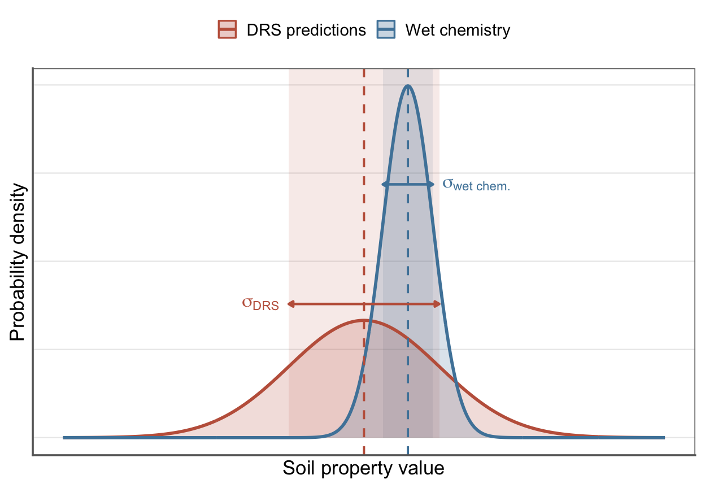
Figure 4.1: Conceptual illustration of measurement and prediction uncertainty. Narrow distributions represent wet-chemistry observations with lower analytical uncertainty, whereas wider distributions represent DRS predictions with larger associated standard deviations. Horizontal arrows indicate one standard deviation around the estimated value.
4.2 Workflow overview
In this practical section, we illustrate how DRS-derived soil property estimates can complement conventional laboratory analyses in the production of digital soil maps. The methodology is demonstrated using the Kansas, USA, dataset introduced in Chapter 3. In addition to the soil property variables used in the DSM example, this dataset includes mid-infrared DRS measurements that were not used previously.
Figure 4.2 presents the conceptual workflow used in this section. The colors distinguish the main groups of steps:
Blue boxes represent field sampling and laboratory reference analysis. These steps provide the measured soil property data used as calibration targets, either to fit a DRS calibration model or to support DSM.
Terracotta boxes correspond to the DRS component. This includes spectral acquisition, calibration modeling, and the generation of spectroscopically predicted soil properties with associated uncertainty, expressed as the prediction error standard deviation. These predictions are treated as an additional source of soil information in the DSM step.
Purple boxes indicate the data integration stage. Here, laboratory observations and DRS predictions are combined into a single dataset.
Green boxes represent the spatial modeling stage, or DSM. Environmental covariates are used together with soil observations to fit spatial prediction models. The uncertainty associated with spectroscopic predictions is used to down-weight these observations relative to laboratory measurements. The final outputs are continuous soil property maps and corresponding uncertainty maps.
All main steps in this workflow are implemented and illustrated using R in the following subsections.
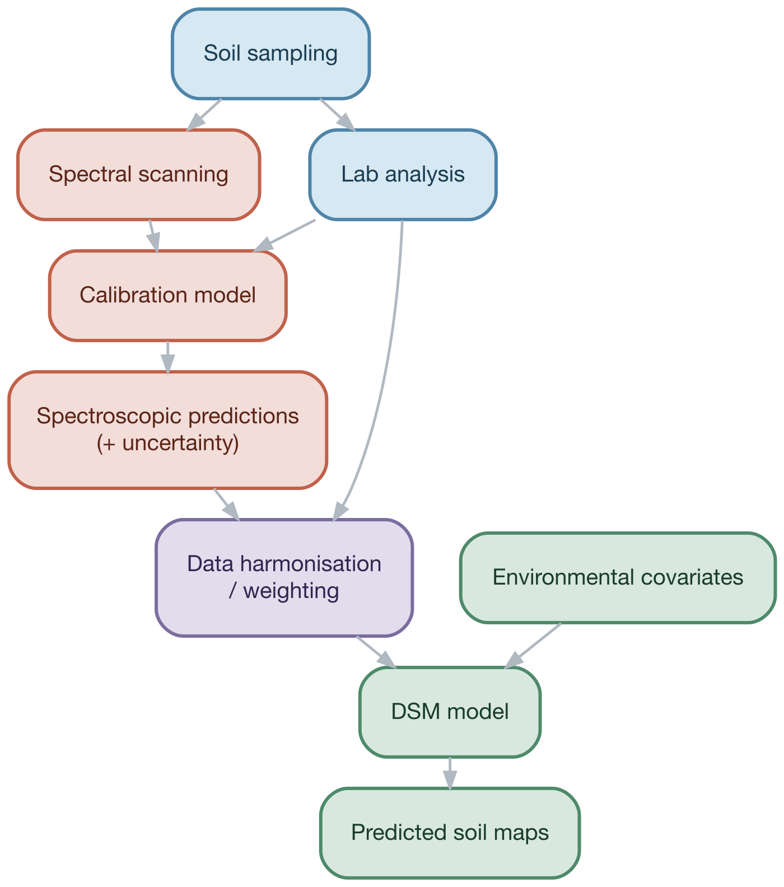
Figure 4.2: Conceptual workflow for integrating spectroscopically predicted soil data into digital soil mapping.
4.3 Generating DRS-derived soil property observations for DSM
In this section, we convert DRS measurements into soil property estimates that can be used as additional observations in DSM. The key requirement is that, for each soil sample, the spectroscopic modeling step provides both a predicted value of the target soil property and an estimate of prediction uncertainty. This follows the approach introduced in the Soil Spectroscopy Training Material (Wadoux et al. (2025), Section 4.3.3), where uncertainty is quantified at the sample level.
For DSM applications, these outputs can be treated similarly to laboratory observations. However, unlike laboratory data, DRS predictions are associated with explicit model-based uncertainty. This uncertainty information can later be used during data integration and spatial modeling.
In the following subsections, we demonstrate how to (i) import and visualize the spectral data, (ii) apply basic spectral preprocessing, (iii) build a spectroscopic prediction model with uncertainty, (iv) define laboratory measurement uncertainty, and (v) harmonize soil property predictions and uncertainties to a standard depth interval.
4.3.1 How to get the data
This module uses two input files, both of which are distributed via the Google Drive folder described in Required downloads:
MIR_KANSAS_data.xlsx: an excel spreadsheet containing mid-infrared (MIR) spectra and associated soil reference measurements for soil samples collected across Kansas, USA. This file is loaded as the primary analytical dataset for spectral modelling and soil property prediction.Environmental_Covariates_250m_KANSAS.tif: a multi-band raster file containing environmental covariates at 250 m spatial resolution derived from remote sensing and climate products. These covariates follow the SCORPAN framework and are used as predictors for digital soil mapping across the Kansas study area.
Both files must be placed in the 01_data/module1/training_data/ folder of the project directory before running any code in this module, as all scripts reference that location via relative paths. Refer to Required downloads for step-by-step download and setup instructions.
4.3.2 Main R packages used here
The main R packages used in this section are:
prospectr: used for handling and preprocessing the DRS spectra to enhance their quality. This package is also used for representative sample selection.ranger: used to fit random forest and quantile regression forest models. In this section, it is used both to predict SOC from DRS spectra and to estimate prediction uncertainty.aqp: used to represent soil profiles and horizons in a structured way, allowing SOC values and their uncertainties to be harmonized to a standard depth interval.terra: used to handle spatial raster data, including environmental covariates, extraction of covariate values at soil sampling locations, and prediction of SOC maps.
4.3.3 Load and plot the DRS data
First, we import the DRS dataset and prepare it for analysis. This dataset contains absorbance measurements collected in the mid-infrared (MIR) region of the electromagnetic spectrum, over the wavenumber range starting from approximately 4000 cm\(^{-1}\) up to approximately 400 cm\(^{-1}\) at an approximate resolution of 1.93 cm\(^{-1}\). This resulted in 1764 spectral variables. Note that this region corresponds to wavelengths of approximately 2500–25000 nm. These measurements were collected under laboratory conditions using air-dried soil samples. Additional details on the DRS measurements are provided in Dangal et al. (2019).
NOTE: MIR spectra show strong, well-defined absorption features associated with molecular vibrations in soil minerals and organic compounds. This makes MIR spectroscopy sensitive to properties such as soil organic carbon, clay minerals, carbonates, and some nutrients. Although this example uses MIR spectra, the workflow can also be applied to vis–NIR or SWIR data, provided suitable calibration models and uncertainty estimates are available.
Let’s start by loading the data:
library(readxl)
library(dplyr)
# Read MIR spectral dataset (Kansas example)
original_dat <- read_excel(
"../SoilFER-Training-Resources/01_data/module1/training_data/MIR_KANSAS_data.xlsx",
.name_repair = "minimal",
na = c("", "NA", "N/A", "NaN"),
progress = FALSE
)
original_dat <- as.data.frame(original_dat)
# dimensions of the dataset (number of samples and variables)
dim(original_dat)## [1] 10352 1786# number of duplicate sample IDs (i.e. repeated measurements for
# the same soil sample)a
sum(duplicated(original_dat$smp_id))## [1] 7768The loaded dataset contains both DRS variables and non-DRS variables. The first step is therefore to separate the spectral data from the rest of the soil dataset. To do this, we create a data frame containing the non-spectral variables and store the DRS variables as a spectral matrix. This structure allows the spectra to be handled separately for preprocessing and modeling, while keeping them linked to the corresponding soil samples.
The spectral variables can be identified from the column names. These can be inspected using colnames(dat). In this dataset, spectral columns follow a consistent naming pattern: they start with the prefix X, followed by numeric values representing the original wavenumbers. For example, a column named X3999.7 corresponds to a spectral variable measured at approximately 3999.7 cm\(^{-1}\).
We use this pattern to separate the spectral variables from the remaining soil data. The X prefix is then removed so that the column names can be converted into numeric wavenumber values. These values are stored in original_wavs and used later for plotting, resampling, and spectral preprocessing.
# Identify spectral columns
# Spectral variables start with "X" followed by at least three digits.
spc_cols <- grep("^X[0-9]{3,}", colnames(original_dat))In the above code, the regular expression ^X[0-9]{3,} selects columns whose names start with X followed by at least three digits. In this dataset, those columns correspond to MIR absorbance values measured at different wavenumbers. We use that to extract the spectral matrix and convert the column names to numeric wavenumber values:
# Extract the spectral matrix
spc_original <- original_dat[, spc_cols]
# Remove the "X" prefix from spectral column names
colnames(spc_original) <- gsub("^X", "", colnames(spc_original))
# Convert spectral column names to numeric wavenumber values
original_wavs <- as.numeric(colnames(spc_original))
# Check the spectral range
range(original_wavs)## [1] 599.7663 3999.7276Because the spectra are recorded at high spectral resolution, the spectral matrix contains many highly correlated variables. Before modeling, we therefore resample the spectra to a coarser wavenumber grid. This reduces computational demand while preserving the main absorption features. In this case, we resample the spectra to a resolution of 8 cm\(^{-1}\) using prospectr::resample(). Since the original spectra do not extend exactly to 4000 cm\(^{-1}\), we avoid extrapolation (highly recommended for all cases) and resample only up to 3992 cm\(^{-1}\). This results in a new spectral matrix with 425 spectral variables, which is more manageable for modeling while still capturing the key spectral information:
# In case you do not have the prospectr package already installed
# please run the following line
install.packages("prospectr")library(prospectr)
# Define a new regular spectral grid for resampling
wavs <- seq(600, 3992, by = 8)
# Resample spectra to the new wavelength grid
spc_resampled <- prospectr::resample(
spc_original,
wav = original_wavs,
new.wav = wavs
)
# check the dimensions
dim(spc_resampled)## [1] 10352 425Now we can plug this resampled spectral matrix into the non-DRS part of the dataframe:
# extract non-spectral variables into a new dataframe
repeated_dat <- original_dat[, -spc_cols]
# in the main dataframe create a new variable called spc
# containing the matrix of spectra
repeated_dat$spc <- spc_resampled
# make some checks
colnames(repeated_dat)
dim(repeated_dat)
dim(repeated_dat$spc)The data contains repeated measurements for each soil sample, which is common in spectroscopic datasets to account for measurement variability. To simplify the analysis, we start by averaging replicated spectral measurements so that each soil sample is represented by a single spectrum.
# Average replicate spectra by sample ID
spc_avg <- aggregate(
repeated_dat$spc,
by = list(smp_id = repeated_dat$smp_id),
FUN = mean
)
# order the results by sample ID to ensure correct alignment with the main
# dataset later on
spc_avg <- spc_avg[order(spc_avg$smp_id), ]
# aggregate() prepends smp_id as first column; extract the spectral matrix
rownames(spc_avg) <- spc_avg$smp_id
spc_avg <- as.matrix(spc_avg[, -1])
# Drop duplicate non-spectral rows (keep first occurrence per sample)
dat <- repeated_dat[!duplicated(repeated_dat$smp_id), ]
dat <- dat[order(dat$smp_id), ]
# Verify that sample IDs are aligned before overwriting spectra
stopifnot(all(rownames(spc_avg) == dat$smp_id))
# Overwrite spectra with the averaged matrix
dat$spc <- spc_avg
# check dimensions of the final dataset
dim(dat)Now let’s plot the spectra (Figure 4.3) that we have so far:
matplot(
wavs,
t(dat$spc),
type = "l",
lty = 1,
xlim = c(4000, 500),
xlab = expression(Wavenumber~(cm^{-1})),
ylab = "Absorbance",
col = rgb(0.8, 0, 0, 0.3)
)
grid(lty = 1)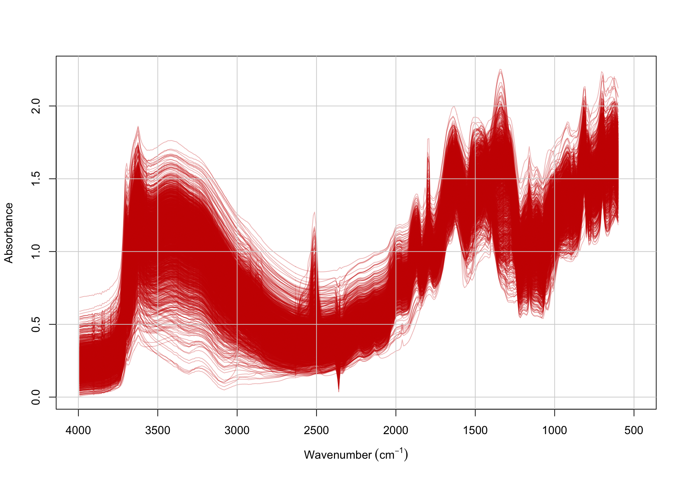
Figure 4.3: Resampled and aggregated MIR spectra.
A unique profile identifier is also created to group horizons belonging to the same soil profile:
4.3.4 Preprocessing of the soil spectra
Raw soil spectra often require preprocessing before modeling. The objective is to reduce instrumental or measurement artifacts while preserving the chemical information relevant for prediction.
The first step is always to inspect the spectra visually. This helps identify evident noise, baseline shifts, outliers, or unstable regions at the edges of the spectral range. Edge noise can occur because DRS detectors often have lower sensitivity near the limits of their operating range. When this occurs, it is common practice to trim the affected regions before modeling. In this example, we do not trim the spectra, but this should be considered for other datasets.
Spectra can also be affected by variation in instrument response, sample presentation, particle size, packing density, and measurement conditions. These effects may introduce additive or multiplicative changes in the spectra, even when the same sample is measured more than once. Common preprocessing methods used to reduce these effects include:
Smoothing, such as moving average or Savitzky–Golay filtering, to reduce high-frequency noise.
Scatter correction, such as standard normal variate (SNV) or multiplicative scatter correction (MSC), to reduce multiplicative effects.
Derivatives, often combined with smoothing, to reduce baseline effects and enhance spectral features.
Derivatives should be used with caution because they can also amplify noise. The choice of preprocessing method should therefore depend on the spectral region, the quality of the measurements, and the modeling objective.
Please see the prospectr package vignettes for additional examples on preprocessing methods for DRS.
NOTE: Scatter correction methods may sometimes appear to reduce model accuracy during internal validation, especially when calibration and validation samples come from the same instrument, preparation protocol, and measurement conditions. In such cases, raw or lightly smoothed spectra may preserve dataset-specific variation that improves apparent performance. However, this variation may not be chemically meaningful and can make the model more sensitive to changes in particle size, packing density, sample presentation, instrument response, or acquisition conditions. Carefully selected scatter correction methods, such as SNV or MSC, may therefore produce models that are slightly less accurate in the short term but more robust when applied to new samples, instruments, or measurement settings. For this reason, scatter correction should be evaluated not only in terms of cross-validation accuracy, but also in terms of expected model transferability and long-term stability.
In this example, we first apply a Savitzky–Golay first derivative to reduce baseline effects and enhance spectral features, followed by standard normal variate (SNV) correction to reduce multiplicative scatter effects. Let’s first look in detail what these two pretreatments would do to a single spectrum. In savitzkyGolay(), m = 1 specifies the first derivative, p = 1 sets the polynomial order used within the moving window, and w = 25 defines the window size in spectral variables. The optimal preprocessing strategy should, however, be evaluated for each dataset. Let’s take the very first spectrum (Figure 4.4) in our dataset and see what happens step-by-step:
# apply standard normal variate (SNV) correction followed by
# a Savitzky–Golay first derivative
a_spectrum <- dat$spc[1, ]
plot(
wavs,
a_spectrum,
type = "l",
lty = 1,
xlim = c(4000, 500),
xlab = expression(Wavenumber~(cm^{-1})),
ylab = "Absorbance",
col = rgb(0.3, 0, 0.8)
)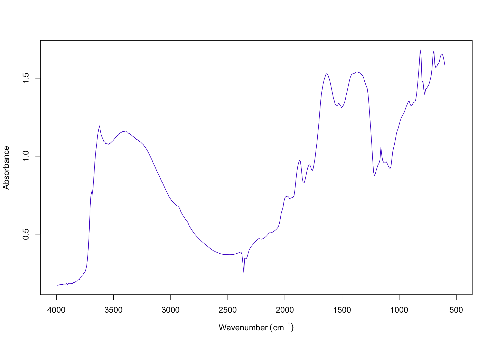
Figure 4.4: The first spectrum in the dataset before preprocessing.
Then let’s see what happens when the first derivative spectrum (Figure 4.5 using the Savitzky–Golay method) is applied to the same spectrum:
# apply standard normal variate (SNV) correction followed by
# a Savitzky–Golay first derivative
a_spectrum_first_der <- prospectr::savitzkyGolay(
a_spectrum, # the spectrum
m = 1, # the derivative order
p = 1, # the polynomial order used within the moving window
w = 25 # the window size in spectral variables
)
# the wavenumber values for the first derivative spectrum are trimmed as a
# result of the moving window. We can get the wavenumber values for the first
# derivative spectrum as follows:
der_wavs <- as.numeric(names(a_spectrum_first_der))
plot(
der_wavs,
a_spectrum_first_der,
type = "l",
lty = 1,
xlim = c(4000, 500),
xlab = expression(Wavenumber~(cm^{-1})),
ylab = "First derivative absorbance",
col = rgb(0, 0.3, 0.8)
)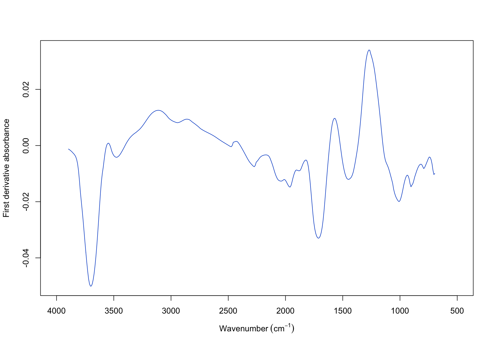
Figure 4.5: The first spectrum after applying Savitzky–Golay first derivative transformation.
A first derivative describes how quickly the spectral signal changes from one wavenumber to the next. Instead of working with the original absorbance values, it highlights the local slope of the spectrum, which can help reduce baseline effects and make spectral features more visible. The Savitzky–Golay method estimates this slope using a small moving window rather than a simple point-to-point subtraction, making the derivative less sensitive to noise. In savitzkyGolay(), w = 25 defines the window size, p = 1 fits a straight line within each window, and m = 1 requests the first derivative. Because the window cannot be centered at the edges of the spectrum, some variables are lost at both ends; this is why we extract the new wavenumber values after applying the derivative. We can see in Figure 4.5 that the first derivative spectrum has a different shape than the original spectrum, with enhanced peaks and reduced baseline effects.
Finally, let’s see what happens when we apply SNV correction to the first derivative spectrum (Figure 4.6):
# apply standard normal variate (SNV) correction followed by
# a Savitzky–Golay first derivative
a_spectrum_first_der_snv <- prospectr::standardNormalVariate(
matrix(a_spectrum_first_der, nrow = 1)
)
plot(
der_wavs,
a_spectrum_first_der_snv,
type = "l",
lty = 1,
xlim = c(4000, 500),
xlab = expression(Wavenumber~(cm^{-1})),
ylab = "SNV of first derivative absorbance",
col = rgb(0.8, 0.3, 0)
)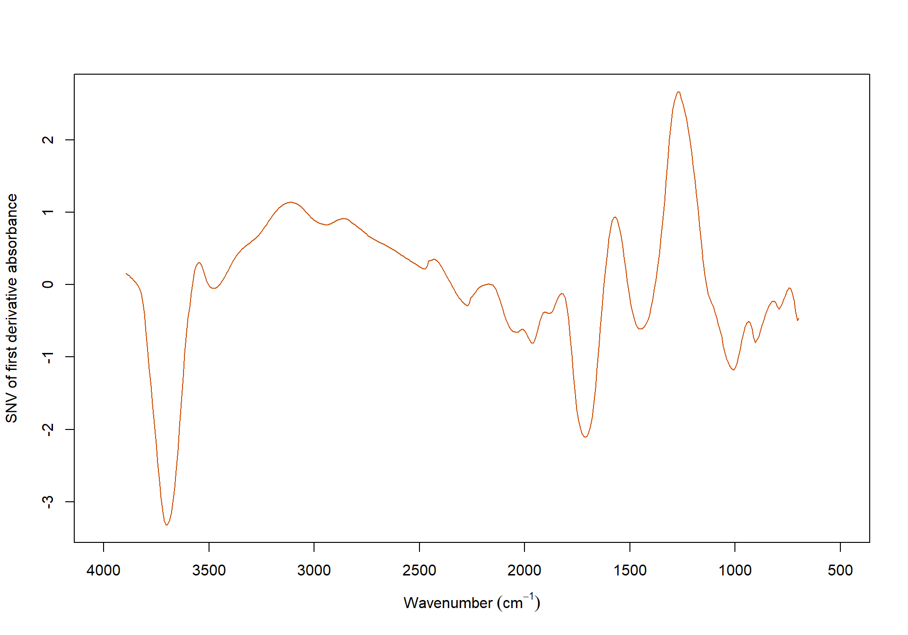
Figure 4.6: The first spectrum after applying Savitzky–Golay first derivative and standard normal variate (SNV) correction.
SNV correction standardizes each spectrum individually. It subtracts the average value of the spectrum and divides by its standard deviation, so the transformed spectrum is centered around zero and expressed on a comparable scale. In Figure 4.6, the main shape of the derivative spectrum is preserved, but the vertical scale changes. This is expected: SNV does not create new spectral features; it mainly reduces differences caused by overall signal intensity, sample packing, particle size, or other multiplicative effects. After SNV, the y-axis no longer represents absorbance directly, but standardized derivative values.
Now that we have seen what the pretreatments do, lets apply them to the entire spectra:
# apply standard normal variate (SNV) correction followed by
# a Savitzky–Golay first derivative
dat$spc_processed <- dat$spc |>
prospectr::savitzkyGolay(m = 1, p = 1, w = 25) |>
prospectr::standardNormalVariate()
# get the wavenumber values for the processed spectra
wavs_processed <- as.numeric(colnames(dat$spc_processed))Now let’s visualise the processed spectra (Figure 4.7) that we have so far:
matplot(
wavs_processed,
t(dat$spc_processed),
type = "l",
lty = 1,
xlim = c(4000, 500),
xlab = expression(Wavenumber~(cm^{-1})),
ylab = "SNV of first derivative absorbance",
col = rgb(0.3, 0, 0.8, 0.3)
)
grid(lty = 1)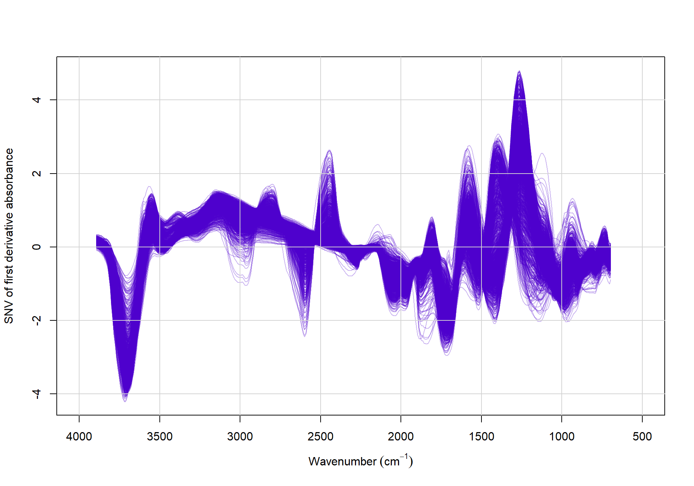
Figure 4.7: Processed MIR spectra after standard normal variate correction and Savitzky–Golay first-derivative transformation.
This basic exploratory step helps verify that the spectra have been imported and processed correctly. In a full analysis, this stage can also be used to screen for unusual spectra or potential measurement issues before fitting the calibration model. The dataset is now ready for statistical modeling.
4.3.5 SOC prediction from DRS spectra with uncertainty estimation
4.3.5.1 A quick note on calibration sampling
Calibration sampling refers to the process of selecting the samples that will be used to build a calibration model. This step is important because the model can only learn from the samples included in the calibration set. If these samples cover the main types of spectra present in the dataset, the model is more likely to work well on new samples.
A common strategy is therefore to select samples that are spectrally representative of the full dataset. This means selecting samples that cover the main patterns of spectral variation, rather than choosing many samples that look very similar to each other. One method for doing this is \(k\)-means sampling, also known as the Næs approach. This method divides the spectral space into \(k\) groups, or clusters, and selects the sample closest to the center of each cluster. In this way, the selected samples are spread across the main regions of the dataset.
Figure4.8 illustrates this idea using a simple synthetic dataset with two dimensions. In this example, the points can be imagined as samples distributed across a two-dimensional space (X and Y coordinates). The full dataset contains 900 points, and the task is to select representative subsets of different sizes. The figure shows the samples selected by \(k\)-means sampling when the target is to select 9, 45, 81, 117, 153, 189, 225, 261, and 297 samples. The red points indicate the samples selected for calibration.
This example shows how \(k\)-means sampling helps distribute the calibration samples across the dataset. In DRS, the same idea is applied to spectral data: the selected samples should cover the main spectral diversity, which can help produce calibration models that are more robust and more useful for prediction.
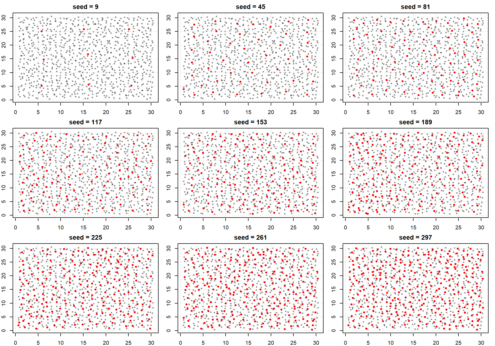
Figure 4.8: Example of \(k\)-means sampling for spectroscopic data. The plot shows the distribution of samples in the space of the first two principal components of the processed spectra. The red points indicate the samples selected for calibration using \(k\)-means sampling with \(k = 85\) cluster centres.
Please see the prospectr package vignettes for additional examples of calibration sample selection for DRS.
4.3.5.2 Select a representative subset of calibration samples for model fitting
The objective is to use a small but representative subset of samples to calibrate a DRS model for predicting SOC. The remaining samples are then treated as if their SOC content were unknown and predicted using the calibrated model. This simulates a practical scenario in which conventional laboratory analysis is performed on a limited subset, while DRS extends soil property information to a larger number of samples.
The rationale is to simulate a cost-efficient scenario in which conventional laboratory analysis is performed only on a limited, representative subset of samples, while DRS is used to extend soil property information to a larger number of samples through model-based prediction.
Here, approximately 20% of the dataset is used for calibration. The calibration subset was selected using the \(k\)-means sampling algorithm for spectroscopic data (Næs, 1987), implemented in the naes() function of the prospectr package. This method partitions the spectral space into \(k\) clusters and selects the sample closest to each cluster centroid, ensuring that the selected subset is well distributed across the main axes of spectral variation. Such a strategy has been shown to provide representative calibration sets that reduce generalization error (Ramirez-Lopez et al., 2014).
The selection operates at the individual sample level using the first 10 principal components of the processed spectra. Once the \(k\) samples are selected, all remaining horizon samples belonging to the same soil profiles as the selected samples are also included in the calibration set. This profile-completion step serves two purposes: it avoids splitting a soil profile between calibration and prediction subsets, which would constitute information leakage, and it naturally increases the calibration set size beyond \(k\) since profiles typically contain multiple horizons. The target of \(k = 85\) cluster centres was chosen so that the resulting profile-completed calibration set contains approximately 20% of the total samples.
# Target number of cluster centres
n_cal <- 85
# Select spectrally representative samples using k-means sampling
# in the space of the first 10 principal components
set.seed(201909)
kms <- prospectr::naes(
dat$spc_processed,
k = n_cal,
pc = 10,
iter.max = 1000
)
# Expand the selection to include all horizon samples from the profiles
# of the selected samples. This avoids splitting a soil profile between
# calibration and prediction subsets, which would constitute information
# leakage. Profiles typically contain multiple horizons, so the final
# calibration set will be larger than n_cal.
kms_samples <- which(dat$ProfID %in% unique(dat$ProfID[kms$model]))The kms_samples vector contains the indices of the samples selected for model calibration. The remaining samples are treated as if their SOC content were unknown and are predicted using the calibrated DRS model. Subsequently, we split the data into calibration and prediction subsets:
4.3.5.3 Model calibration
In DRS, a model can be seen as a “translator” that converts spectral data into something more meaningful to a soil scientist, such as a soil property value, for example soil organic carbon or organic matter content. This translation is usually done with a statistical model. In general terms, this can be written as:
\[ \text{soil property value} = f(\text{DRS spectrum}) + \epsilon \]
where \(f\) is the model that links the spectrum to the soil property, and \(\epsilon\) represents the prediction error. In other words, the model tries to learn how changes in the spectrum are related to changes in the soil property of interest.
Different statistical and machine-learning approaches can be used to build this translator. Some of the most common are:
Partial least squares (PLS) regression: This is one of the standard methods used to calibrate DRS models. PLS is useful because spectra contain many highly correlated variables. For example, a spectrum is a continuous signal, so the absorbance at one wavelength or wavenumber is usually very similar to the absorbance at neighboring positions. This high redundancy can be difficult for some statistical methods. PLS handles this by summarizing the original spectral variables into a smaller set of new, uncorrelated variables that capture the main spectral variation relevant for prediction.
Neural networks: These are non-linear machine-learning models that can capture complex relationships between spectra and soil properties. They can be very powerful, especially when the relationship is not well described by a linear model. However, they usually require larger datasets and careful tuning to avoid overfitting.
Random forests: This is an ensemble learning method that builds many decision trees and averages their predictions. Random forests can capture non-linear relationships and interactions between spectral variables. They are often robust and flexible, although they are usually less common than PLS in traditional soil spectroscopy workflows.
In this section, we calibrate a random forest (RF) model to predict SOC from DRS spectra. Specifically, we use a quantile regression forest because it provides a prediction distribution for each sample, rather than only a single point estimate. This allows us to obtain both the predicted SOC value and an associated uncertainty estimate, expressed here as the prediction standard deviation. This uncertainty is needed because the DRS-derived predictions will later be used as weighted observations in the DSM workflow.
Why quantile regression forests? A standard random forest gives one predicted SOC value for each spectrum. Here, however, we also need to know how uncertain that prediction is, because DRS-derived values will later be combined with laboratory measurements in the DSM model. Quantile regression forests are useful because they provide a range of possible SOC values for each sample and indicate which values are more or less likely. From this range, we calculate the average prediction and its prediction standard deviation. This allows less certain DRS predictions to receive lower weight during spatial modelling.
For the RF modeling step, we use the ranger package (Wright and Ziegler, 2017).
Prediction uncertainty is quantified by the model using the conditional distribution of the predictions. This approach is described in detail for soil DRS data by Wadoux and Ramirez-Lopez (2025). From this model distribution, a mean predicted value, a prediction variance, and a prediction standard deviation are calculated for each soil sample. These quantities represent the required outputs of the DRS modeling step for DSM.
To obtain an assessment of model performance, cross-validation is done at the soil profile level. This avoids using horizons from the same profile in both training and testing subsets. For each validation fold, the model is trained on a subset of profiles and used to predict SOC for the remaining profiles.
Model performance is evaluated using cross-validation at the soil profile level. All horizons from the same profile are assigned to the same fold, so that horizons from one profile are never split between calibration and validation subsets. In each iteration, one fold of profiles is left out, the RF model is calibrated using the remaining profiles, and SOC is predicted for the excluded profiles. This avoids pseudo-replication and provides a more realistic assessment of model performance. The predicted SOC values are then compared with the laboratory reference values to compute performance metrics such as bias, root mean squared error (RMSE), and \(R^2\). The validation results are visualized by plotting predicted SOC values against the corresponding laboratory reference measurements, with error bars indicating the prediction standard deviation for each sample.
Table 4.1 summarises the metrics used in this section to evaluate DRS predictions and digital soil mapping (DSM) models.
| Metric | What it tells you | How to interpret it |
|---|---|---|
| Bias | Average tendency to over- or under-predict | Values close to 0 are preferred. Positive values indicate over-prediction; negative values indicate under-prediction. |
| RMSE | Typical prediction error, expressed in the units of the soil property | Lower values indicate better accuracy. RMSE should be interpreted relative to the range and practical relevance of the soil property. Note that this should not be interpreted as the maximal error you can expect. |
| \(R^2\) | Proportion of variation in the reference data explained by the model | Higher values indicate stronger agreement, but a high \(R^2\) does not necessarily imply low prediction error. |
| NSE | Predictive performance relative to simply using the mean of the observations as a baseline | Values close to 1 indicate good predictive performance. Values near 0 indicate performance similar to using the mean. Values below 0 indicate poor performance. |
| wNSE | Weighted version of NSE that accounts for differences in observation uncertainty | Values close to 1 are preferred. More reliable observations contribute more strongly to the assessment. |
| DRS prediction uncertainty | Uncertainty associated with each spectroscopic prediction, expressed here as a prediction standard deviation | Larger values indicate less confident DRS predictions and can be used to down-weight observations in DSM. |
Let’s first define the fold structure for cross-validation. We assign folds at the profile level to ensure that all horizons from the same soil profile are kept together in either the training or test set, preventing information leakage and providing a more realistic evaluation of model performance.
# set.seed() makes the random assignment reproducible: rerunning the
# script always produces the same fold structure. The value 123 is arbitrary.
set.seed(14092019) # just any number
# 10 folds
nfolds <- 10
# We assign folds at the profile level because observations within a
# profile are depth-wise measurements of the same soil column... they
# are not independent. Splitting at the observation level would leak
# information from the same profile into both training and test sets.
cal_profile_ids <- unique(dat_cal$ProfID)
fold_index <- sample(rep(1:nfolds, length.out = length(cal_profile_ids)))
# Each observation inherits the fold of its parent profile
dat_cal$fold <- fold_index[match(dat_cal$ProfID, cal_profile_ids)]Now we can proceed with the modeling. In this implementation, for each fold, we use the option quantreg = TRUE, which enables estimation of the conditional distribution of SOC rather than only a single point prediction. The forest was grown with 3500 trees, bootstrap sampling with replacement, and a minimum node size of 10. Splits were selected using the maximally selected rank statistic (splitrule = "maxstat"), and a fixed seed was used for reproducibility. For each held-out sample, 100 values were drawn from the estimated conditional distribution and summarised by their mean, variance, and standard deviation. Further details on the ranger implementation and this uncertainty-aware modelling approach are provided by Wright and Ziegler (2017) and Wadoux and Ramirez-Lopez (2025).
# Load the ranger package for quantile forest modeling
library(ranger)
library(matrixStats)
# Prepare storage vectors for CV predictions and uncertainty
SOC_predRF <- rep(NA_real_, nrow(dat_cal)) # mean prediction
SOC_varRF <- rep(NA_real_, nrow(dat_cal)) # predictive variance
SOC_sdRF <- rep(NA_real_, nrow(dat_cal)) # predictive standard deviation
# Run 10-fold cross-validation
for (k in seq_len(nfolds)) {
cat("\rProcessing fold", k, "out of 10")
# Test set: all samples belonging to fold k
test_rows <- which(dat_cal$fold == k)
# Training set: all remaining samples
train_rows <- which(dat_cal$fold != k)
# Fit quantile random forest on training data
model <- ranger(
x = dat_cal$spc_processed[train_rows, ],
y = dat_cal$SOC[train_rows],
quantreg = TRUE,
num.trees = 3500,
sample.fraction = 1,
replace = TRUE,
splitrule = "maxstat",
min.node.size = 10,
seed = 201909
)
# Predict by drawing samples from the conditional distribution
pred_matrix <- predict(
model,
data = dat_cal$spc_processed[test_rows, ],
type = "quantiles",
what = function(x) sample(x, 100, replace = TRUE)
)$predictions
# Store prediction summary statistics
SOC_predRF[test_rows] <- rowMeans(pred_matrix)
SOC_varRF[test_rows] <- rowVars(pred_matrix)
SOC_sdRF[test_rows] <- sqrt(SOC_varRF[test_rows])
}
# Save predictions back into the dataset
dat_cal$SOC_predRF <- SOC_predRF
dat_cal$SOC_varRF <- SOC_varRF
dat_cal$SOC_sdRF <- SOC_sdRFFigure 4.9 shows the validation plot of predicted SOC values against laboratory reference measurements. Error bars represent the prediction standard deviation for each sample, providing a visual representation of the uncertainty associated with each prediction.
xy_lims <- range(dat_cal$SOC_predRF, dat_cal$SOC)
# Validation plot
plot(
x = dat_cal$SOC_predRF,
y = dat_cal$SOC,
xlab = "Predicted SOC (%)",
ylab = "Measured SOC (%)",
xlim = xy_lims,
ylim = xy_lims,
col = rgb(0, 0, 0, 0.5),
pch = 16,
cex = 1.5
)
# add the error bars representing the prediction standard deviation
arrows(
x0 = dat_cal$SOC_predRF - dat_cal$SOC_sdRF,
y0 = dat_cal$SOC,
x1 = dat_cal$SOC_predRF + dat_cal$SOC_sdRF,
y1 = dat_cal$SOC,
code = 3,
length = 0,
col = rgb(0, 0, 0, 0.5)
)
abline(0, 1, col = col_ref, lwd = 1.5, lty = 2)
grid(col = rgb(0.8, 0.8, 0.8, 0.6), lty = 1)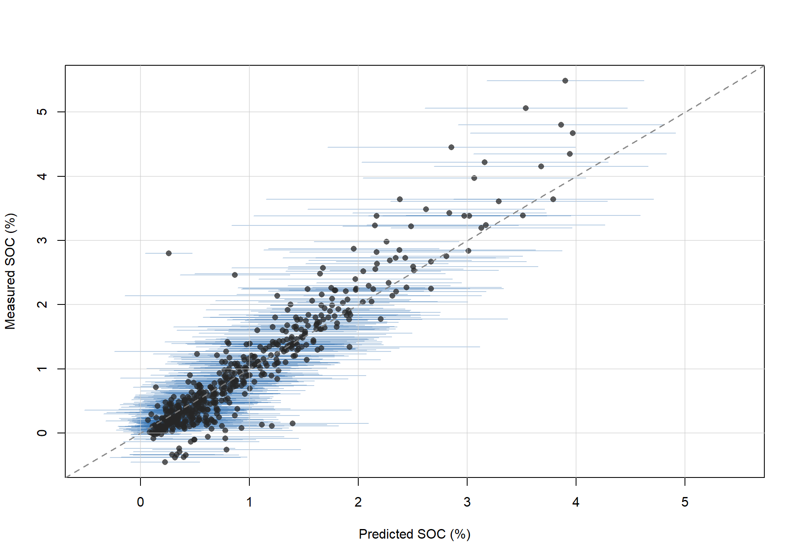
Figure 4.9: Validation plot of predicted SOC values against laboratory reference measurements. Error bars represent the prediction standard deviation for each sample. The dashed line indicates the 1:1 relationship, which represents perfect agreement between predictions and measurements.
The root mean squared error (RMSE) of such type of quantification models can be computed as follows:
drs_rmse <- sqrt(mean((dat_cal$SOC_predRF - dat_cal$SOC)^2, na.rm = TRUE))
cat("DRS model RMSE:", round(drs_rmse, 3), "% SOC\n")## DRS model RMSE: 0.342 % SOCThe final model is fitted using all the calibration data at once:
4.3.5.4 DRS-based prediction and uncertainty estimation for non-calibration samples
The prediction in the remaining 80% of the samples is done by applying the final DRS model to the processed spectra of the prediction subset. The same approach is used to obtain both predicted SOC values and associated uncertainty estimates for these samples:
# Predict for the remaining samples using the final model
drs_soc_preds <- predict(
final_drs_model,
data = dat_pred$spc_processed,
type = "quantiles",
what = function(x) sample(x, 100, replace = TRUE)
)$predictions
# Store prediction summary statistics
dat_pred$SOC_predRF <- rowMeans(drs_soc_preds)
dat_pred$SOC_varRF <- rowVars(drs_soc_preds)
dat_pred$SOC_sdRF <- sqrt(dat_pred$SOC_varRF)4.4 Assembling the augmented dataset of laboratory measurements and DRS-based predictions
For DSM, we assemble a final spatial modelling dataset for SOC using two sources of information:
Laboratory SOC measurements for the samples used to calibrate the DRS model. These samples represent approximately 20% of the original dataset. Because these values are assumed to be available from conventional laboratory analysis, they are retained in preference to DRS-based predictions.
DRS-based SOC predictions for the remaining samples, which were not used in the calibration of the DRS model. As described above, these samples are treated as if laboratory SOC values were unavailable. Their SOC values are therefore estimated entirely from the DRS model. This setup simulates a realistic application scenario in which DRS is used to increase the number of SOC observations available for DSM.
# Extract metadata for the augmented dataset
dat_augmented <- dat[, c(
"smp_id", "ProfID", "Long_Site.x", "Lat_Site.x",
"Top_depth_cm.x", "Bottom_depth_cm.x"
)
]
# Initialise SOC values and associated standard deviations
dat_augmented$SOC <- NA
dat_augmented$SOC_sd <- NA
# Add laboratory SOC values for the samples used to calibrate the DRS model
dat_augmented$SOC[kms_samples] <- dat$SOC[kms_samples]
# Add DRS-based SOC predictions for the remaining samples
dat_augmented$SOC[-kms_samples] <- dat_pred$SOC_predRF Add the deviations from the DRS model as the uncertainty of the DRS-based predictions:
4.5 Uncertainty of the conventional laboratory measurement
The SOC concentrations in the dataset used here were determined by high-temperature dry combustion, one of the most precise laboratory approaches for SOC quantification and the standard reference method for this property.
Quantifying laboratory measurement uncertainty in the absence of replicate measurements requires an external reference. Stevens et al. (2013) assessed the reproducibility of dry combustion SOC analysis across a large harmonised European soil survey and reported a standard error of laboratory (SEL) of approximately 2 g C kg⁻¹ for mineral soils overall (equivalent to 0.2% SOC). This value reflects intermediate precision under standardised conditions in an accredited laboratory and represents a realistic but optimistic estimate of the analytical component of uncertainty, excluding sampling and preparation variability.
For this dataset, which was similarly analysed under standardised laboratory conditions (Dangal et al., 2019), we adopt a constant absolute uncertainty of \(\sigma_{\text{lab}} = 0.15\)% SOC as a pragmatic approximation consistent with published literature. A constant rather than proportional error model is used here because a proportional formulation (where \(\sigma = CV \times y_i\)) causes low-SOC observations to receive disproportionately high weights during model calibration, irrespective of their actual reliability. In practical applications, laboratory-specific replicate measurements should be used to derive empirical uncertainty estimates.
# Constant absolute laboratory uncertainty: 0.15% SOC
# Based on Stevens et al. (2013), SEL ≈ 2 g C kg-1 for mineral soils
dat$SOC_sd <- 0.15The same value is assigned to the laboratory observations in the augmented dataset:
4.6 Depth harmonization of predictions and uncertainties
Digital soil mapping often requires soil properties to be expressed for standard depth intervals, such as 0–30 cm. However, field observations and DRS predictions are typically available at the horizon level, with horizons varying in thickness. In this step, SOC values and their associated uncertainties are aggregated to the 0–30 cm interval using depth-weighted averaging. Profiles that do not fully cover the target interval are excluded. This harmonization is applied to both the reference dataset, which contains laboratory measurements only, and the augmented dataset, which combines laboratory measurements with DRS-based predictions.
We first load the aqp package and convert both datasets to SoilProfileCollection objects, which store horizon-level data in a structured format that supports depth-based operations:
library(aqp)
depths(dat) <- ProfID ~ Top_depth_cm.x + Bottom_depth_cm.x
depths(dat_augmented) <- ProfID ~ Top_depth_cm.x + Bottom_depth_cm.xCombining uncertainty estimates across horizons requires variance propagation. For a depth-weighted average \(\hat{y} = \sum_i w_i y_i / \sum_i w_i\), where \(w_i\) is the thickness of horizon \(i\) within the target interval, the aggregated standard deviation is \(\sigma = \sqrt{\sum_i w_i^2 \sigma_i^2} / \sum_i w_i\). The helper function below implements this for an arbitrary depth interval, returning NA for profiles that do not fully cover it:
weighted_sd_0_30 <- function(top, bottom, sd, z1 = 0, z2 = 30) {
w <- pmax(0, pmin(bottom, z2) - pmax(top, z1))
keep <- w > 0 & !is.na(sd)
w <- w[keep]
sd <- sd[keep]
if (sum(w) < (z2 - z1)) return(NA)
sqrt(sum((w * sd)^2)) / sum(w)
}4.6.1 Reference dataset
The reference dataset contains laboratory SOC measurements only. We compute the depth-weighted mean SOC and its associated uncertainty (approximated as 3% of the measured value, as defined earlier) for the 0–30 cm interval:
soc_mean_ref <- profileApply(dat, function(p) {
h <- horizons(p)
w <- pmax(0, pmin(h$Bottom_depth_cm.x, 30) - pmax(h$Top_depth_cm.x, 0))
keep <- w > 0 & !is.na(h$SOC)
if (sum(w[keep]) < 30) return(NA)
sum(w[keep] * h$SOC[keep]) / sum(w[keep])
})
soc_sd_ref <- horizons(dat) |>
as.data.frame() |>
group_by(ProfID) |>
summarise(
SOC_sd_0_30 = weighted_sd_0_30(Top_depth_cm.x, Bottom_depth_cm.x, SOC_sd),
.groups = "drop"
)
coords_ref <- as.data.frame(dat)[, c("ProfID", "Lat_Site.x", "Long_Site.x")]
coords_ref <- coords_ref[!duplicated(coords_ref$ProfID), ]
soc_ref_0_30_xy <- soc_sd_ref |>
mutate(SOC_0_30 = soc_mean_ref) |>
select(ProfID, SOC_0_30, SOC_sd_0_30) |>
merge(coords_ref, by = "ProfID", all.x = TRUE)
head(soc_ref_0_30_xy)## ProfID SOC_0_30 SOC_sd_0_30 Lat_Site.x Long_Site.x
## 1 PROF0001 1.760000 0.09354143 39.35346 -94.94322
## 2 PROF0002 NA NA 39.35212 -94.94328
## 3 PROF0003 1.928667 0.09110434 39.35650 -94.94547
## 4 PROF0004 1.766080 0.09949874 39.27917 -101.72586
## 5 PROF0005 1.612867 0.08689074 39.39768 -97.15917
## 6 PROF0006 1.530000 0.10606602 39.28955 -96.996064.6.2 Augmented dataset
The augmented dataset combines laboratory measurements with DRS-based predictions. The single SOC_sd column carries the appropriate uncertainty for each observation (laboratory analytical error for reference samples, RF prediction uncertainty for DRS-predicted samples), so the same function applies without modification:
soc_mean_aug <- profileApply(
dat_augmented,
function(p) {
h <- horizons(p)
w <- pmax(0, pmin(h$Bottom_depth_cm.x, 30) - pmax(h$Top_depth_cm.x, 0))
keep <- w > 0 & !is.na(h$SOC)
if (sum(w[keep]) < 30)
return(NA)
sum(w[keep] * h$SOC[keep]) / sum(w[keep])
}
)
soc_sd_aug <- horizons(dat_augmented) |>
as.data.frame() |>
group_by(ProfID) |>
summarise(
SOC_sd_0_30 = weighted_sd_0_30(Top_depth_cm.x, Bottom_depth_cm.x, SOC_sd),
.groups = "drop"
)
coords_aug <- as.data.frame(dat_augmented)[, c("ProfID", "Lat_Site.x", "Long_Site.x")]
coords_aug <- coords_aug[!duplicated(coords_aug$ProfID), ]
soc_aug_0_30_xy <- soc_sd_aug |>
mutate(SOC_0_30 = soc_mean_aug) |>
select(ProfID, SOC_0_30, SOC_sd_0_30) |>
merge(coords_aug, by = "ProfID", all.x = TRUE)
head(soc_aug_0_30_xy)## ProfID SOC_0_30 SOC_sd_0_30 Lat_Site.x Long_Site.x
## 1 PROF0001 1.700881 0.3640277 39.35346 -94.94322
## 2 PROF0002 NA NA 39.35212 -94.94328
## 3 PROF0003 1.785986 0.3421232 39.35650 -94.94547
## 4 PROF0004 1.587666 0.3896374 39.27917 -101.72586
## 5 PROF0005 1.644030 0.3246484 39.39768 -97.15917
## 6 PROF0006 1.373222 0.3006131 39.28955 -96.99606Figure 4.10 illustrates the empirical probability distributions of SOC values in the reference and augmented datasets after depth harmonization. These two distributions are very similar and have comparable means and standard deviations, indicating that the DRS-based predictions are consistent with the laboratory measurements in terms of their central tendency and variability.
dens_ref <- density(soc_ref_0_30_xy$SOC_0_30, na.rm = TRUE)
dens_aug <- density(soc_aug_0_30_xy$SOC_0_30, bw = dens_ref$bw, na.rm = TRUE)
plot(
dens_ref$x,
dens_ref$y,
type = "l",
col = "#4E84A8",
lwd = 2,
ylab = "Density",
xlab = "SOC, %"
)
lines(
dens_aug$x,
dens_aug$y,
col = "#C1614A",
lwd = 2
)
legend(
"topright",
legend = c("Conventional lab", "DRS-augmented"),
col = c("#4E84A8", "#C1614A"),
lwd = 2,
bty = "n"
)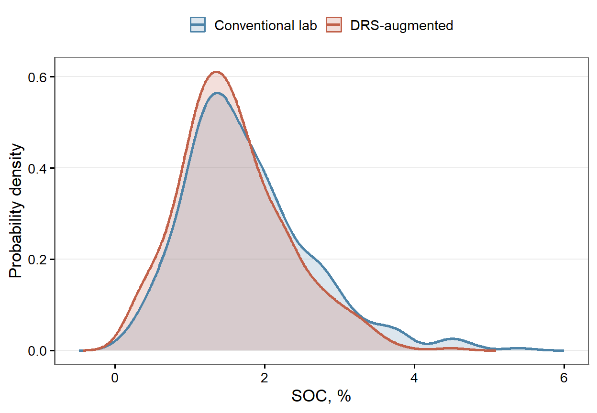
Figure 4.10: Empirical distributions of depth-harmonised SOC (0–30 cm) for the reference dataset (conventional laboratory measurements only) and the augmented dataset (laboratory measurements combined with DRS-based predictions).
Note that the depth harmonisation step propagates horizon-level uncertainties through a variance-weighted formula, which reduces the aggregated standard deviation for profiles with multiple horizons as a mathematical artefact rather than a reflection of improved data quality. To avoid this distortion, the laboratory uncertainty is reassigned directly at the profile level before weighting:
4.7 Digital soil mapping
4.7.1 Preparation of the covariates
At this stage, the environmental covariates are prepared exactly as in the training material, so the same workflow can be followed here. The objective is to align the soil observations with the raster covariate stack and extract the values of all environmental predictors for each sampling location. These predictors will later be used in the modeling step.
The procedure involves four main operations:
loading the raster stack of environmental covariates,
converting the soil profile summaries into a spatial point object,
reprojecting the points so that they match the coordinate reference system of the covariates,
extracting raster values at each soil observation location and attaching them to the point data.
This produces a spatial dataset in which each soil observation is associated with the full set of environmental predictors.
library(terra)
# Load environmental covariates
covs <- rast(
"../SoilFER-Training-Resources/01_data/module1/training_data/Environmental_Covariates_250m_KANSAS.tif"
)
cov_names <- names(covs)
# Reference dataset (laboratory measurements only)
soil_pts_ref <- vect(
soc_ref_0_30_xy,
geom = c("Long_Site.x", "Lat_Site.x"),
crs = "EPSG:4326"
)
soil_pts_ref <- project(soil_pts_ref, covs)
soil_pts_ref <- cbind(soil_pts_ref, terra::extract(covs, soil_pts_ref)[, -1])
# Augmented dataset (laboratory + DRS-based predictions)
soil_pts_aug <- vect(
soc_aug_0_30_xy,
geom = c("Long_Site.x", "Lat_Site.x"),
crs = "EPSG:4326"
)
soil_pts_aug <- project(soil_pts_aug, covs)
soil_pts_aug <- cbind(soil_pts_aug, terra::extract(covs, soil_pts_aug)[, -1])4.7.2 DSM model training of SOC with DRS-augmented data
In this section, we demonstrate how DRS predictions can be integrated into DSM modeling. The idea is that each observation, whether derived from laboratory analysis or DRS, is associated with a sample-specific uncertainty estimate. This uncertainty can be used to control the relative influence of each observation during model training. A practical way to do this is through case weighting. Observations with lower uncertainty are assigned higher statistical weight, while observations with higher uncertainty contribute less to the fitted model.
In the following example, we again use quantile regression forests, this time to map SOC following a workflow similar to the previous DSM examples. The workflow includes deriving uncertainty-based weights, fitting models with and without spectroscopic data, and comparing the resulting spatial predictions.
4.7.2.1 Deriving observation weights
Weights are derived from the uncertainty estimates obtained in the previous section. A simple and commonly used formulation assigns each observation a weight equal to the inverse of its variance:
\[w_i = \frac{1}{\sigma_i^2}\]
Observations with smaller uncertainty receive larger weights and therefore contribute more to model calibration. Weights are computed separately for each dataset:
for the reference dataset, \(\sigma_i\) is the depth-harmonized laboratory analytical uncertainty;
for the augmented dataset, \(\sigma_i\) is either the laboratory analytical uncertainty or the DRS prediction uncertainty, depending on the source of each observation.
Weights are then normalized by dividing by the maximum weight within each dataset, so that the most precise observation receives a weight of one and all others are expressed relative to it:
\[w_i^{\text{norm}} = \frac{w_i}{\max(w)}\]
# Compute inverse-variance weights
soil_pts_ref$weight <- 1 / soil_pts_ref$SOC_sd_0_30^2
soil_pts_aug$weight <- 1 / soil_pts_aug$SOC_sd_0_30^2
# Normalise by the maximum weight within each dataset
soil_pts_ref$weight <- soil_pts_ref$weight / max(soil_pts_ref$weight, na.rm = TRUE)
soil_pts_aug$weight <- soil_pts_aug$weight / max(soil_pts_aug$weight, na.rm = TRUE)
summary(soil_pts_ref$weight)
summary(soil_pts_aug$weight)4.7.2.2 Baseline DSM model using laboratory data
Before integrating DRS-derived information, we first fit a baseline DSM model using laboratory SOC observations only. Environmental covariates representing soil-forming factors are used as predictors in a random forest model. This provides a reference spatial prediction of SOC across the study area, against which models incorporating spectroscopic data can be compared. The resulting baseline SOC map is shown in Figure 4.11 and was generated using the following code:
library(ranger)
# Prepare modeling table
soil_df_ref <- as.data.frame(soil_pts_ref, geom = "XY")[ ,
c("x", "y", "SOC_0_30", "SOC_sd_0_30", "weight", cov_names)
]
soil_df_ref <- soil_df_ref[!is.na(soil_df_ref$SOC_0_30), ]
# Fit baseline random forest model using laboratory SOC
form <- as.formula(
paste("SOC_0_30 ~", paste(cov_names, collapse = " + "))
)
mod_ref <- ranger(
formula = form,
data = soil_df_ref,
case.weights = soil_df_ref$weight,
replace = FALSE,
sample.fraction = 0.632,
num.trees = 500,
seed = 201909
)
# Predict SOC across the covariate raster stack
soc_map_ref <- predict(covs, mod_ref, na.rm = TRUE)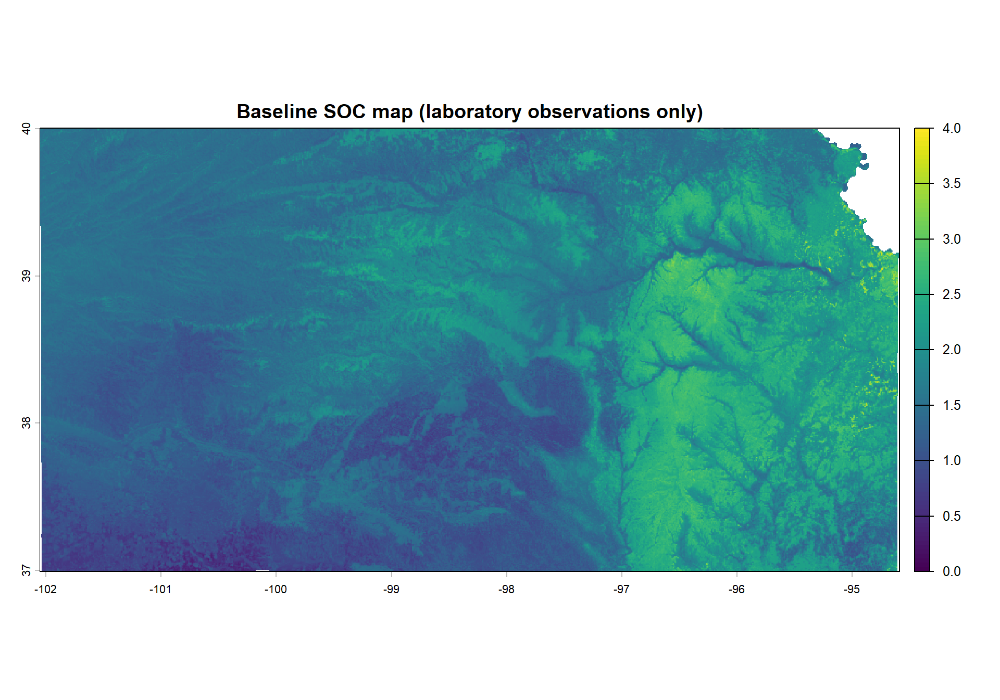
Figure 4.11: Baseline SOC map predicted using laboratory observations only.
4.7.2.3 DSM model using DRS-augmented data
The augmented dataset combines laboratory SOC measurements with DRS-based predictions, increasing the number of observations available for model calibration. The modeling procedure follows the same structure as the baseline, with one difference: observation weights derived from the unified SOC_sd column are passed to the model, so that laboratory measurements and DRS predictions contribute proportionally to their respective uncertainties. The resulting SOC map is shown in Figure 4.12 and was generated using the following code:
# Prepare modeling table
soil_df_aug <- as.data.frame(soil_pts_aug, geom = "XY")[,
c("x", "y", "SOC_0_30", "SOC_sd_0_30", "weight", cov_names)
]
# Remove profiles with missing SOC
soil_df_aug <- soil_df_aug[!is.na(soil_df_aug$SOC_0_30), ]
# Fit random forest model using the augmented dataset
mod_aug <- ranger(
formula = form,
data = soil_df_aug,
case.weights = soil_df_aug$weight,
replace = FALSE,
sample.fraction = 0.632,
num.trees = 500,
seed = 201909
)
# Predict SOC across the covariate raster stack
soc_map_aug <- predict(covs, mod_aug, na.rm = TRUE)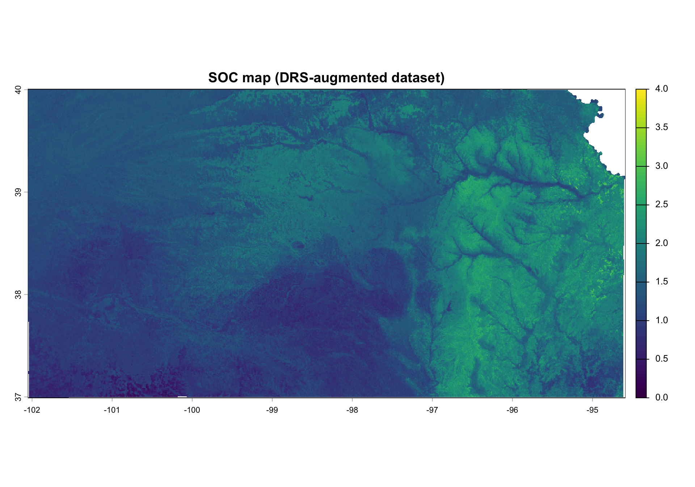
Figure 4.12: SOC map predicted using the DRS-augmented dataset.
The difference between the augmented and baseline SOC maps can be visualized to identify areas where the inclusion of DRS-based predictions has a notable impact on the spatial predictions. This is done by simply subtracting the baseline map from the augmented map:
diff_map <- soc_map_aug - soc_map_ref
plot(
diff_map,
main = "Difference (augmented - baseline)",
col = rev(hcl.colors(100, "RdBu")),
range = c(-1.5, 1.5)
)Figure 4.13 presents the three maps side by side for direct comparison. The left panel shows the baseline SOC predictions based on laboratory observations only, the middle panel shows the SOC predictions from the DRS-augmented model, and the right panel shows the difference between the two (augmented minus baseline). All maps use the same color scale to facilitate visual comparison.
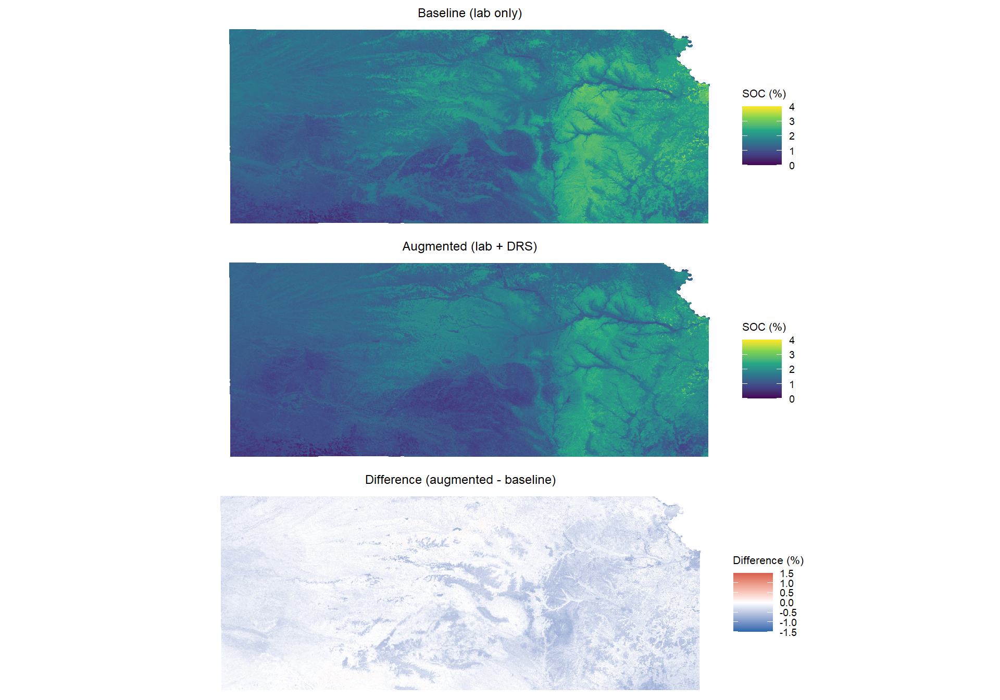
Figure 4.13: SOC predictions from the baseline model (top) and the DRS-augmented model (middle), and their difference (augmented minus baseline, bottom).
4.7.3 Model validation
The predictive performance of both DSM models is evaluated using cross-validation. Because the augmented dataset combines laboratory measurements and DRS-derived predictions, validation must account for observation-specific uncertainty. Treating all observations as equally reliable would be inconsistent with the weighting strategy applied during model calibration. Validation statistics are therefore computed using the same inverse-variance weights, so that precise observations contribute more to the performance assessment than uncertain ones.
4.7.3.1 Weighted performance metrics
Three weighted metrics are used. Each extends a standard DSM validation statistic by incorporating observation weights \(w_i\).
The weighted mean error (\(\text{ME}_w\)) measures signed prediction bias:
\[\text{ME}_w = \frac{\sum_{i=1}^{n} w_i \left( \hat{z}(s_i) - z(s_i) \right)}{\sum_{i=1}^{n} w_i}\]
The weighted root mean squared error (\(\text{RMSE}_w\)) quantifies overall prediction error, penalising large deviations more than small ones:
\[\text{RMSE}_w = \sqrt{\frac{\sum_{i=1}^{n} w_i \left( \hat{z}(s_i) - z(s_i) \right)^2}{\sum_{i=1}^{n} w_i}}\]
The weighted Nash–Sutcliffe efficiency (\(\text{NSE}_w\)) evaluates predictive skill relative to the weighted mean of observed values \(\bar{z}_w = \sum_i w_i z(s_i) / \sum_i w_i\):
\[\text{NSE}_w = 1 - \frac{\sum_{i=1}^{n} w_i \left( \hat{z}(s_i) - z(s_i) \right)^2}{\sum_{i=1}^{n} w_i \left( z(s_i) - \bar{z}_w \right)^2}\]
Values of \(\text{NSE}_w\) close to 1 indicate good predictive performance; negative values indicate the weighted mean is a better predictor than the model.
wME <- function(obs, pred, w) {
sum(w * (pred - obs), na.rm = TRUE) / sum(w, na.rm = TRUE)
}
wRMSE <- function(obs, pred, w) {
sqrt(sum(w * (pred - obs)^2, na.rm = TRUE) / sum(w, na.rm = TRUE))
}
wNSE <- function(obs, pred, w) {
zbar_w <- sum(w * obs, na.rm = TRUE) / sum(w, na.rm = TRUE)
num <- sum(w * (pred - obs)^2, na.rm = TRUE)
den <- sum(w * (obs - zbar_w)^2, na.rm = TRUE)
1 - num / den
}4.7.3.2 Cross-validating the models
Model performance is assessed using 10-fold cross-validation, applied separately to the reference and augmented datasets. In each fold, the model is trained on the remaining observations and used to predict SOC for the withheld fold. Weighted performance metrics are then computed using the same inverse-variance weights used during model calibration, so that the validation reflects the same data quality assumptions as the fitted models.
run_cv <- function(data, response, predictors, nfolds = 10, seed = 201909) {
set.seed(seed)
n <- nrow(data)
fold_id <- sample(rep(seq_len(nfolds), length.out = n))
cv_pred <- rep(NA_real_, n)
form <- as.formula(paste(response, "~", paste(predictors, collapse = " + ")))
for (fold in seq_len(nfolds)) {
train <- data[fold_id != fold, ]
test <- data[fold_id == fold, ]
mod <- ranger(
formula = form,
data = train,
case.weights = train$weight,
replace = FALSE,
sample.fraction = 0.632,
seed = seed
)
cv_pred[fold_id == fold] <- predict(mod, data = test)$predictions
}
data.frame(
obs = data[[response]],
pred = cv_pred,
weight = data$weight
)
}
cv_ref <- run_cv(soil_df_ref, response = "SOC_0_30", predictors = cov_names)
cv_aug <- run_cv(soil_df_aug, response = "SOC_0_30", predictors = cov_names)The weighted performance metrics are computed for each model and assembled into a comparison table:
compute_metrics <- function(cv) {
data.frame(
wME = round(wME(cv$obs, cv$pred, cv$weight), 3),
wRMSE = round(wRMSE(cv$obs, cv$pred, cv$weight), 3),
wNSE = round(wNSE(cv$obs, cv$pred, cv$weight), 3)
)
}
metrics <- rbind(
data.frame(Model = "Reference (lab only)", compute_metrics(cv_ref)),
data.frame(Model = "Augmented (lab + DRS)", compute_metrics(cv_aug))
)
metrics## Model wME wRMSE wNSE
## 1 Reference (lab only) 0.01 0.546 0.586
## 2 Augmented (lab + DRS) -0.03 0.517 0.5724.8 Additional activities for further exploration
4.8.1 What is the optimal number of samples for DRS model calibration?
Two fundamental questions arise in any DRS-augmented DSM workflow (and even in just any scenario where DRS is to be applied for the first time): how many samples are needed to calibrate a reliable spectroscopic model, and which samples should be selected? In the practical exercise above, 20% of the available samples were arbitrarily designated as the calibration set. That is a pragmatic choice to simulate a cost-efficient scenario, but not one derived from a principled analysis of the data.
A key advantage of DRS is that spectral measurements are rapid and inexpensive. A large number of soil samples can therefore be scanned before any conventional laboratory analysis is committed to. This creates a practical opportunity: spectral information from the full sample set can be used to decide which samples are most informative for calibration, and only those samples need to be sent for conventional analysis. The calibration set selection problem can thus be framed entirely in terms of the spectra, without prior knowledge of the response variable. This strategy relies on the assumption that soil DRS spectra contain sufficient information about the underlying soil variability to support the selection of representative calibration samples.
Ramirez-Lopez et al. (2014) proposed a data-driven approach to identify both the optimal calibration set size and the most representative sampling algorithm. The core idea is to compare the statistical distribution of the candidate calibration set against the distribution of the full sample population in the principal component space of the spectra. The mean squared distance (MSD) between kernel density estimates of the two distributions is used as a measure of representativeness:
\[\text{msd} = \frac{1}{k} \sum_{j=1}^{k} \int_a^b \left( P_p(x_j) - P_s(x_j \in cs) \right)^2 dx_j\]
where \(P_p(x_j)\) is the density of the \(j\)th principal component in the full population, \(P_s(x_j \in cs)\) is the density in the calibration subset, and \(k\) is the number of retained components. As the calibration set size increases, the MSD decreases and eventually stabilises (the point of stabilisation indicates the minimum number of samples needed to adequately represent the spectral population). This approach requires no reference measurements and can be applied directly to the scanned spectra before any laboratory analysis is carried out.
The workflow for identifying the optimal calibration set size is illustrated in 4.14.
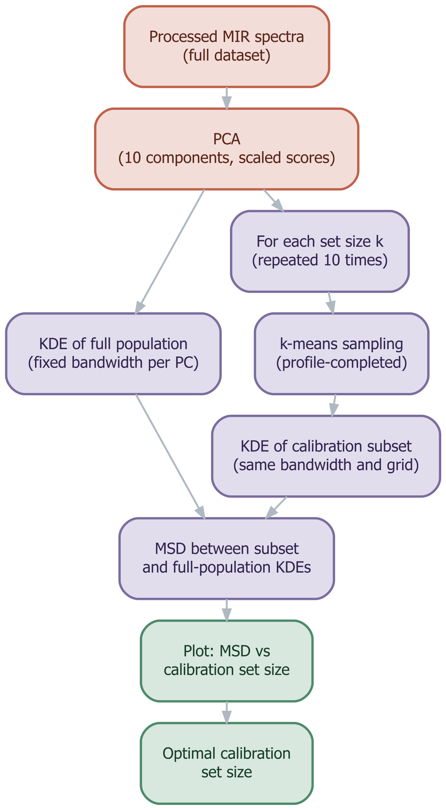
Figure 4.14: Workflow for identifying the optimal calibration set size using the mean squared distance between spectral density estimates.
In the following exercise, this workflow is applied to the Kansas MIR dataset to evaluate how different calibration set sizes affect model performance when the selection is based only on spectral information. Environmental covariates, such as those used in the DSM exercise, could also be considered in addition to the DRS spectra.
4.8.1.1 Step 1: Principal component analysis of the processed spectra
PCA is computed once on the full dataset and the scores are scaled by their standard deviations so that all components contribute equally to the MSD computation.
4.8.1.2 Step 2: Kernel density estimates for the full population
A KDE is computed for each of the 10 PCs using the full dataset. The bandwidth and grid endpoints are fixed here and reused for all subset comparisons, ensuring that differences in MSD reflect differences in the underlying distributions rather than differences in smoothing.
4.8.1.3 Step 3: MSD across calibration set sizes
For each candidate set size, \(k\)-means sampling is applied to the PC scores. The selected samples are then profile-completed (all horizons from the profiles of the selected samples are included) to avoid splitting profiles between calibration and prediction sets. The MSD is computed across all 10 PCs and averaged. The procedure is repeated 10 times per set size to account for the stochastic nature of \(k\)-means initialisation.
# Candidate calibration set sizes to evaluate (number of k-means centres)
set_sizes <- seq(10, 200, by = 10)
# Number of repetitions per set size to account for k-means stochasticity
repetitions <- 10
# Matrix to store MSD values: rows = set sizes, columns = repetitions
msd_matrix <- matrix(NA, nrow = length(set_sizes), ncol = repetitions)
# KDE of PC1 for each set size (first repetition only, used for plotting)
kde_subsets_pc1 <- vector("list", length(set_sizes))
# Average number of horizon samples after profile completion, per set size
n_samples_vec <- numeric(length(set_sizes))
for (i in seq_along(set_sizes)) {
# Store sample counts across repetitions to compute the average
n_samp_rep <- numeric(repetitions)
for (r in seq_len(repetitions)) {
# Different seed per repetition and set size for independent realisations
set.seed(r * i)
# k-means sampling in PC score space
kms_i <- prospectr::naes(
scores,
k = set_sizes[i],
iter.max = 1000
)
# Profile-complete the selection: include all horizons from the profiles
# of the selected samples to avoid splitting profiles across sets
idx_i <- which(dat$ProfID %in% unique(dat$ProfID[kms_i$model]))
n_samp_rep[r] <- length(idx_i)
# Compute MSD for each PC separately, then average across components
# The same bandwidth and grid as the full-population KDE are used
# so that differences in MSD reflect distributional differences only
msd_pcs <- numeric(ncol(scores))
for (j in seq_len(ncol(scores))) {
kde_j <- density(
scores[idx_i, j],
bw = kde_full[[j]]$bw,
n = n_grid,
from = min(scores[, j]),
to = max(scores[, j])
)
msd_pcs[j] <- mean((kde_j$y - kde_full[[j]]$y)^2)
}
# Average MSD across all 10 PCs for this repetition and set size
msd_matrix[i, r] <- mean(msd_pcs)
# Store PC1 KDE for the first repetition only (used in the density plot)
if (r == 1) {
kde_subsets_pc1[[i]] <- density(
scores[idx_i, 1],
bw = kde_full[[1]]$bw,
n = n_grid,
from = min(scores[, 1]),
to = max(scores[, 1])
)
}
}
# Average number of samples across repetitions for the dual x-axis labels
n_samples_vec[i] <- round(mean(n_samp_rep))
}
# Summarise MSD across repetitions: mean and SD per set size
msd_mean <- rowMeans(msd_matrix)
msd_sd <- apply(msd_matrix, 1, sd)4.8.1.4 Step 4: Visualising distributional convergence
Figure 4.15 illustrates the convergence of the calibration subset distribution toward the full population distribution, shown here for the first principal component as a representative example. The MSD curve in Figure 4.16 integrates this comparison across all 10 retained components, each contributing equally to the average since the scores are scaled to unit variance.
plot(
kde_full[[1]]$x, kde_full[[1]]$y,
type = "l", lwd = 2, col = "black",
xlab = "PC 1 (scaled)", ylab = "Density"
)
for (i in seq_along(set_sizes)) {
lines(
kde_subsets_pc1[[i]]$x,
kde_subsets_pc1[[i]]$y,
col = rgb(0.20, 0.45, 0.70, 0.25),
lwd = 1
)
}
lines(kde_full[[1]]$x, kde_full[[1]]$y, lwd = 2, col = "black")
legend(
"topleft",
legend = c("Full set", "Calibration subsets"),
col = c("black", rgb(0.20, 0.45, 0.70, 0.6)),
lwd = c(2, 1),
bty = "n"
)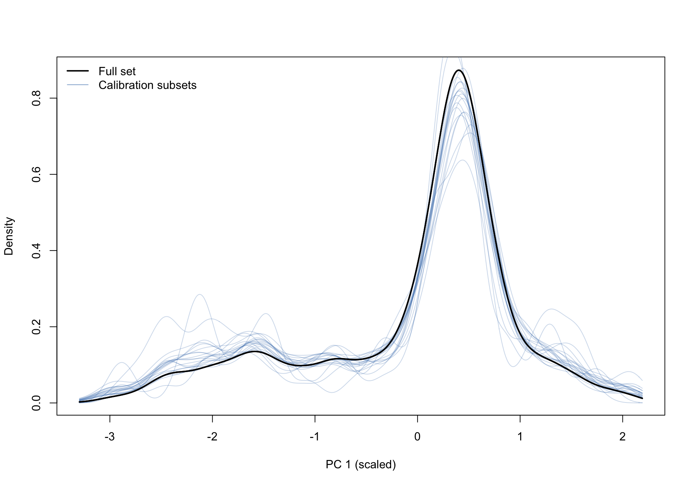
Figure 4.15: Empirical distributions of the first principal component of the processed MIR spectra. The solid black line shows the full population; semi-transparent blue lines show calibration subsets of increasing size.
4.8.1.5 Step 5: Identifying the optimal calibration set size
Figure 4.16 shows the MSD as a function of calibration set size. The ribbon represents ±1 standard deviation across repetitions. The point at which the curve flattens is the proposed optimal calibration set size; beyond that point, increasing the number of samples produces negligible improvement in spectral representativeness.
The MSD curve declines steeply up to approximately 50–60 profiles (~330–390 samples), after which the rate of decrease slows substantially. This suggests that around 50–60 profiles capture the main spectral variability of the population, with further additions producing diminishing returns.
The 85 profiles, corresponding to 564 samples, used in the mapping exercise are located beyond the apparent inflection point of the MSD curve. This indicates that the selected calibration set size is likely sufficient to capture the main spectral variability of the dataset. A smaller calibration set of approximately 60 profiles could also be justified, whereas fewer than 40–50 profiles would fall within the steep region of the curve, where spectral representativeness is still increasing substantially.
# Extended margins to accommodate both axes and rotated labels
par(mar = c(7, 5, 6, 2))
# Base plot with sample counts on bottom x axis
plot(
x = set_sizes,
y = msd_mean,
type = "n",
xlab = "",
ylab = "Mean squared distance between density estimates",
xaxt = "n",
ylim = range(c(msd_mean - msd_sd, msd_mean + msd_sd))
)
# uncertainty band (±1 SD)
polygon(
x = c(set_sizes, rev(set_sizes)),
y = c(msd_mean - msd_sd, rev(msd_mean + msd_sd)),
col = adjustcolor("#4E84A8", alpha.f = 0.25),
border = NA
)
# Mean MSD line
lines(set_sizes, msd_mean, col = "#4E84A8", lwd = 1.5)
# Bottom axis: approximate number of samples (rotated labels)
axis(
side = 1,
at = set_sizes,
labels = n_samples_vec,
las = 2,
cex.axis = 0.8
)
mtext(
"Number of samples in calibration set",
side = 1, line = 5.5, cex = 0.9
)
# Top axis: number of profiles
axis(
side = 3,
at = set_sizes,
labels = set_sizes,
las = 2,
cex.axis = 0.8
)
mtext(
"Number of profiles in calibration set",
side = 3, line = 4.5, cex = 0.9
)
grid(lty = 1, col = rgb(0.8, 0.8, 0.8, 0.5))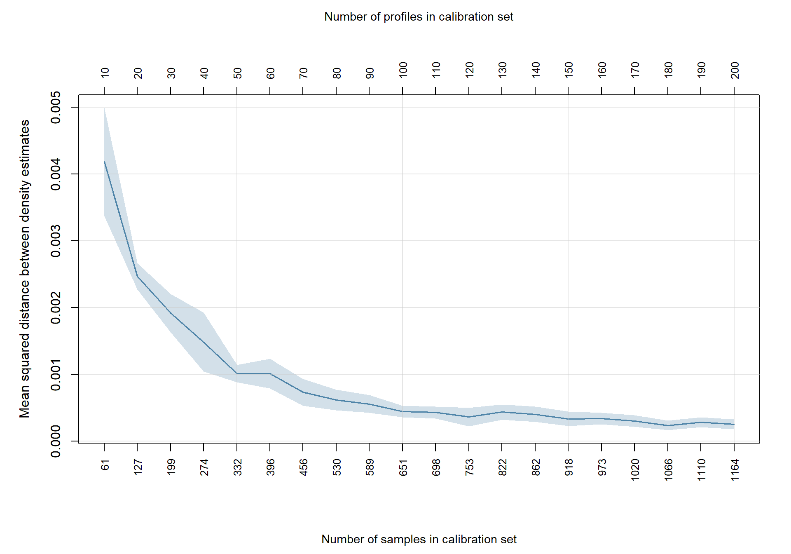
Figure 4.16: Mean squared distance between the spectral density estimates of calibration subsets and the full population, as a function of calibration set size. The ribbon shows one standard deviation across repetitions. The bottom axis shows the approximate number of horizon samples; the top axis shows the corresponding number of soil profiles.
4.8.2 How does the number of DRS calibration samples affect DSM accuracy?
The influence of DRS-derived information on DSM can be explored by systematically varying the number of samples used to calibrate the DRS model. Such a sensitivity analysis provides insight into how the size of the DRS calibration set affects both the spatial pattern of DSM predictions and the overall predictive performance of the final map.
In this exercise, several calibration scenarios are evaluated, ranging from small calibration sets, where only a limited number of samples have laboratory reference measurements, to larger calibration sets that provide broader coverage of the spectral variability in the study area. For each scenario, a DRS model is calibrated using the selected laboratory-measured samples and then used to predict SOC for the remaining scanned samples. These DRS-derived predictions are combined with the available laboratory observations to create an augmented dataset for DSM.
For each calibration set size, a weighted DSM model is fitted using uncertainty-based case weights. Laboratory observations and DRS-derived predictions therefore contribute to model calibration according to their estimated reliability. Spatial prediction maps can then be generated and compared with the baseline map derived from laboratory observations only. These comparisons help identify changes in spatial patterns, prediction smoothness, local variability, and map accuracy as the number of DRS calibration samples increases.
4.8.2.1 Create the DRS calibration subsets
Here, we use an increasing number of profiles selected for calibration {20, 50, 85, 140, 200, and 300} spanning a range from highly sparse to nearly complete coverage of the available spectral variability.
n_profiles <- c(20, 50, 85, 140, 200, 300)
# For each calibration set size, select profiles using k-means sampling
# and store the indices of the calibration and prediction samples
cal_indices <- vector("list", length(n_profiles))
names(cal_indices) <- as.character(n_profiles)
for (i in seq_along(n_profiles)) {
cat("\nSelecting", n_profiles[i], "profiles\n")
set.seed(201909)
kms_i <- prospectr::naes(
dat$spc_processed,
k = n_profiles[i],
pc = 10,
iter.max = 1000
)
# Profile-complete the selection
cal_idx <- which(dat$ProfID %in% unique(dat$ProfID[kms_i$model]))
cal_indices[[i]] <- cal_idx
cat(" Calibration samples:", length(cal_idx), "\n")
}4.8.2.2 Calibrate DRS models and predict SOC for non-calibration samples
A quantile regression forest is calibrated on the selected samples and applied to predict SOC and its associated prediction standard deviation for all remaining samples:
# Storage for DRS predictions across calibration set sizes
drs_preds <- vector("list", length(n_profiles))
names(drs_preds) <- as.character(n_profiles)
for (i in seq_along(n_profiles)) {
cat("\nFitting DRS model for", n_profiles[i], "profiles\n")
cal_idx <- cal_indices[[i]]
pred_idx <- setdiff(seq_len(nrow(dat)), cal_idx)
# Fit quantile regression forest on calibration samples
drs_model_i <- ranger(
x = dat$spc_processed[cal_idx, ],
y = dat$SOC[cal_idx],
quantreg = TRUE,
num.trees = 3500,
sample.fraction = 1,
replace = TRUE,
splitrule = "maxstat",
min.node.size = 10,
seed = 201909
)
# Predict SOC for non-calibration samples
preds_i <- predict(
drs_model_i,
data = dat$spc_processed[pred_idx, ],
type = "quantiles",
what = function(x) sample(x, 100, replace = TRUE)
)$predictions
# Store mean prediction and prediction standard deviation
drs_preds[[i]] <- data.frame(
row_idx = pred_idx,
SOC_predRF = rowMeans(preds_i),
SOC_sdRF = sqrt(rowVars(preds_i))
)
cat(" ", nrow(drs_preds[[i]]), "samples predicted\n")
}4.8.2.3 Assemble the augmented datasets
For each scenario, laboratory SOC values are retained for the calibration profiles and DRS-based predictions are used for the remaining samples. Prediction standard deviations from the quantile regression forest are assigned as uncertainty for the DRS-derived observations, and a constant analytical uncertainty of 0.15% SOC is assigned to the laboratory observations.
# Storage for augmented datasets
aug_datasets <- vector("list", length(n_profiles))
names(aug_datasets) <- as.character(n_profiles)
my_col_names <- c(
"smp_id",
"ProfID",
"Long_Site.x",
"Lat_Site.x",
"Top_depth_cm.x",
"Bottom_depth_cm.x"
)
for (i in seq_along(n_profiles)) {
cal_idx <- cal_indices[[i]]
pred_idx <- drs_preds[[i]]$row_idx
# Initialise augmented dataset with metadata columns only
aug_i <- as.data.frame(dat)[, my_col_names]
aug_i$SOC <- NA
aug_i$SOC_sd <- NA
# Laboratory observations for calibration profiles
aug_i$SOC[cal_idx] <- dat$SOC[cal_idx]
# Assuming a constant standard deviation for lab measurements
aug_i$SOC_sd[cal_idx] <- 0.15
# DRS-based predictions for non-calibration samples
aug_i$SOC[pred_idx] <- drs_preds[[i]]$SOC_predRF
aug_i$SOC_sd[pred_idx] <- drs_preds[[i]]$SOC_sdRF
aug_datasets[[i]] <- aug_i
}4.8.2.4 Separate a fixed set of profiles for spatial validation
To enable a fair comparison of DSM accuracy across calibration set sizes, a fixed set of profiles with laboratory SOC measurements is held out before model fitting. These profiles are excluded from all augmented datasets and used only for final evaluation. Because the same validation set is used across all scenarios, the resulting accuracy metrics are directly comparable.
This approach differs from the cross-validation used in the main workflow. There, cross-validation was applied separately to the reference and augmented datasets as an internal diagnostic (a reasonable consistency check for each model on its own training data). However, because the two datasets differ in composition (i.e. one contains only laboratory observations, while the other combines laboratory and DRS-derived observations with different weights), the resulting weighted metrics are not strictly comparable between the two models. For the sensitivity analysis presented here, where the goal is to compare DSM accuracy across five calibration scenarios, a single fixed held-out set evaluated with the same unweighted metrics is the only approach that ensures comparability.
We can use soil_df_ref directly for this purpose, since it already contains depth-harmonized SOC values derived exclusively from laboratory measurements (the same dataset used to fit the baseline DSM model). We simply sample a subset of its profiles as the held-out validation set.
# Add ProfID to soil_df_ref to enable profile-level matching
soil_df_ref$ProfID <- soc_ref_0_30_xy$SOC_0_30[!is.na(soc_ref_0_30_xy$SOC_0_30)]
# Sample 50 profiles for held-out spatial validation
# These profiles are never used in any calibration or augmented dataset
set.seed(202409)
val_profiles <- sample(unique(soil_df_ref$ProfID), size = 50)
val_data <- soil_df_ref[soil_df_ref$ProfID %in% val_profiles, ]
cat("Validation profiles:", length(val_profiles), "\n")
cat(
"Remaining profiles available for DSM modelling:",
nrow(soil_df_ref) - nrow(val_data), "\n"
)4.8.2.5 Harmonise the DRS predictions to the 0–30 cm depth interval
SOC values and uncertainties are aggregated to the 0–30 cm interval using the same depth-weighted approach applied in the main workflow. Laboratory uncertainty is reassigned at the profile level after harmonisation to avoid the variance-reduction artefact described earlier.
# Helper function: depth-weighted mean SOC for 0-30 cm
# Returns NA for profiles not fully covering the interval
depth_weighted_mean_0_30 <- function(p) {
h <- horizons(p)
w <- pmax(0, pmin(h$Bottom_depth_cm.x, 30) - pmax(h$Top_depth_cm.x, 0))
keep <- w > 0 & !is.na(h$SOC)
if (sum(w[keep]) < 30)
return(NA)
sum(w[keep] * h$SOC[keep]) / sum(w[keep])
}
# Storage for depth-harmonised augmented datasets
aug_0_30 <- vector("list", length(n_profiles))
names(aug_0_30) <- as.character(n_profiles)
for (i in seq_along(n_profiles)) {
cal_idx <- cal_indices[[i]]
aug_i <- aug_datasets[[i]]
depths(aug_i) <- ProfID ~ Top_depth_cm.x + Bottom_depth_cm.x
# Depth-weighted mean SOC over 0-30 cm per profile
soc_mean_i <- profileApply(aug_i, depth_weighted_mean_0_30)
# Depth-weighted propagation of SOC uncertainty over 0-30 cm
soc_sd_i <- horizons(aug_i) |>
as.data.frame() |>
group_by(ProfID) |>
summarise(
SOC_sd_0_30 = weighted_sd_0_30(Top_depth_cm.x, Bottom_depth_cm.x, SOC_sd),
.groups = "drop"
)
# One set of coordinates per profile for spatial modelling
coords_i <- as.data.frame(aug_i)[, c("ProfID", "Lat_Site.x", "Long_Site.x")]
coords_i <- coords_i[!duplicated(coords_i$ProfID), ]
# Combine mean SOC, uncertainty, and coordinates into a profile-level table
soc_0_30_i <- soc_sd_i |>
mutate(SOC_0_30 = soc_mean_i) |>
select(ProfID, SOC_0_30, SOC_sd_0_30) |>
merge(coords_i, by = "ProfID", all.x = TRUE)
# Reassign constant laboratory uncertainty at profile level to avoid
# the variance-reduction artefact from depth-weighted propagation
cal_profiles <- unique(dat$ProfID[cal_idx])
soc_0_30_i$SOC_sd_0_30[soc_0_30_i$ProfID %in% cal_profiles] <- 0.15
# Remove held-out validation profiles from the augmented dataset
aug_0_30[[i]] <- soc_0_30_i[!soc_0_30_i$ProfID %in% val_profiles, ]
}4.8.2.6 Fit DSM models using the DRS-augmented datasets and compare the resulting SOC maps
A weighted random forest DSM model is fitted for each augmented dataset using inverse-variance case weights, following the same procedure as in the main workflow. The resulting SOC maps are compared visually with the baseline laboratory-only map to identify how spatial predictions change as the calibration set size increases.
# Storage for DSM models and predicted SOC maps
dsm_models <- vector("list", length(n_profiles))
soc_maps <- vector("list", length(n_profiles))
names(dsm_models) <- as.character(n_profiles)
names(soc_maps) <- as.character(n_profiles)
my_formula <- as.formula(
paste("SOC_0_30 ~", paste(cov_names, collapse = " + "))
)
nms <- c("x", "y", "SOC_0_30", "SOC_sd_0_30", cov_names)
for (i in seq_along(n_profiles)) {
if (i == 1) {
cat("\nThis may take a while... how about a break? \u2615\u2615\n")
}
cat("\nFitting DSM model for", n_profiles[i], "profiles\n")
# Convert to spatial points and extract covariates
pts_i <- vect(
aug_0_30[[i]],
geom = c("Long_Site.x", "Lat_Site.x"),
crs = "EPSG:4326"
)
pts_i <- project(pts_i, covs)
pts_i <- cbind(pts_i, terra::extract(covs, pts_i)[, -1])
# Prepare modelling table and compute inverse-variance weights
df_i <- as.data.frame(pts_i, geom = "XY")[ , nms]
df_i <- df_i[!is.na(df_i$SOC_0_30) & !is.na(df_i$SOC_sd_0_30), ]
df_i$weight <- 1 / df_i$SOC_sd_0_30^2
df_i$weight <- df_i$weight / max(df_i$weight, na.rm = TRUE)
# Fit weighted random forest DSM model
dsm_models[[i]] <- ranger(
formula = my_formula,
data = df_i,
case.weights = df_i$weight,
replace = FALSE,
sample.fraction = 0.632,
num.trees = 500,
seed = 201909
)
# Predict SOC across the covariate raster stack
soc_maps[[i]] <- predict(covs, dsm_models[[i]], na.rm = TRUE)
}Now the resulting SOC maps can be visualised and compared with the baseline map derived from laboratory observations only. The difference maps between the augmented and baseline predictions can also be plotted to highlight areas where the inclusion of DRS-derived observations had the largest influence on the spatial patterns of predicted SOC. Figure 4.17 shows the predicted SOC maps and their differences from the baseline for each calibration set size.
par(
mfrow = c(length(n_profiles), 2),
mar = c(1, 1, 1.5, 3),
oma = c(0, 0, 0, 0)
)
for (i in seq_along(n_profiles)) {
n_cal_samples <- length(cal_indices[[i]])
plot(
soc_maps[[i]],
main = paste0("DRS cal.: ", n_profiles[i], " profiles (", n_cal_samples, " samples)"),
range = c(0, 4)
)
plot(
soc_maps[[i]] - soc_map_ref,
main = paste0("Difference: ", n_profiles[i], " profiles (", n_cal_samples, " samples)"),
col = rev(hcl.colors(100, "RdBu")),
range = c(-1.5, 1.5)
)
}
par(mfrow = c(1, 1), mar = c(5, 4, 4, 2), oma = c(0, 0, 0, 0))library(ggplot2)
library(ggpubr)
# Shared map theme
map_theme <- theme_void() +
theme(
legend.position = "right",
legend.key.width = unit(1.0, "cm"),
legend.key.height = unit(0.3, "cm"),
legend.text = element_text(size = 7),
legend.title = element_text(size = 8),
plot.title = element_text(hjust = 0.5, size = 9),
plot.margin = margin(0, 0, 0, 0)
)
# Build one row per calibration set size: SOC map (left) + difference map (right)
plot_rows <- vector("list", length(n_profiles))
for (i in seq_along(n_profiles)) {
n_cal_samples <- length(cal_indices[[i]])
# Convert rasters to data frames
df_aug_i <- as.data.frame(soc_maps[[i]], xy = TRUE, na.rm = TRUE)
df_diff_i <- as.data.frame(soc_maps[[i]] - soc_map_ref, xy = TRUE, na.rm = TRUE)
names(df_aug_i)[3] <- "SOC"
names(df_diff_i)[3] <- "SOC"
# Left panel: augmented SOC map
p_aug_i <- ggplot(df_aug_i, aes(x, y, fill = SOC)) +
geom_raster() +
scale_fill_viridis_c(limits = c(0, 4), name = "SOC (%)") +
coord_equal() + map_theme +
ggtitle(paste0("DRS cal.: ", n_profiles[i], " profiles (", n_cal_samples, " samples)"))
# Right panel: difference map (augmented minus baseline)
p_diff_i <- ggplot(df_diff_i, aes(x, y, fill = SOC)) +
geom_raster() +
scale_fill_gradient2(
low = "#2166ac",
mid = "white",
high = "#d6604d",
midpoint = 0,
limits = c(-1.5, 1.5),
name = "Difference (%)"
) +
coord_equal() + map_theme +
ggtitle(paste0("Difference: ", n_profiles[i], " profiles (", n_cal_samples, " samples)"))
# Combine into one row
plot_rows[[i]] <- ggarrange(
p_aug_i, p_diff_i,
ncol = 2, nrow = 1
)
}
# Stack all rows into a single figure
ggarrange(
plotlist = plot_rows,
ncol = 1,
nrow = length(n_profiles)
)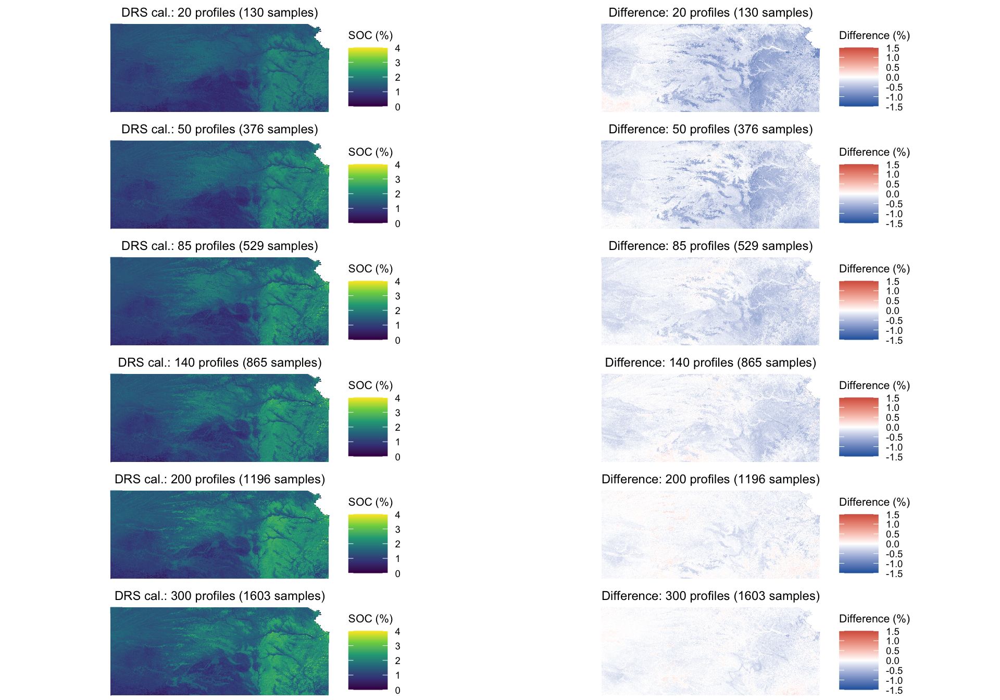
Figure 4.17: Comparison of SOC maps derived from laboratory-only observations and DRS-augmented datasets with varying calibration set sizes. The difference maps highlight areas where the inclusion of DRS-derived predictions had the largest influence on the spatial patterns of predicted SOC.
4.8.2.7 Evaluate DSM accuracy on the held-out validation profiles
DSM accuracy is evaluated on the fixed set of held-out profiles defined earlier. Each fitted DSM model is applied to the validation locations and predictions are compared against the corresponding laboratory SOC values. Because the same 50 validation profiles are used across all calibration scenarios, the resulting metrics are directly comparable. Unweighted ME, RMSE, and NSE are computed, since all validation observations are laboratory measurements with the same constant analytical uncertainty, making weighting unnecessary.
# Evaluate each DSM model on the held-out validation profiles
dsm_metrics <- data.frame()
for (i in seq_along(n_profiles)) {
# Predict SOC at validation locations using the fitted DSM model
preds_val <- predict(dsm_models[[i]], data = val_data)$predictions
obs <- val_data$SOC_0_30
resid <- preds_val - obs
me <- mean(resid, na.rm = TRUE)
rmse <- sqrt(mean(resid^2, na.rm = TRUE))
nse <- 1 - sum(resid^2, na.rm = TRUE) /
sum((obs - mean(obs, na.rm = TRUE))^2, na.rm = TRUE)
dsm_metrics <- rbind(
dsm_metrics,
data.frame(
n_profiles = n_profiles[i],
n_samples = length(cal_indices[[i]]),
ME = round(me, 3),
RMSE = round(rmse, 3),
NSE = round(nse, 3)
)
)
}
dsm_metricsFigure 4.18 shows the RMSE of the DSM predictions on the held-out validation profiles as a function of the number of samples used to calibrate the DRS model. The bottom x-axis shows the number of calibration samples, while the top x-axis shows the corresponding number of calibration profiles. This plot illustrates how DSM accuracy changes as more DRS-derived observations are included in the augmented dataset, providing insight into the trade-off between calibration effort and mapping performance.
par(mar = c(7, 5, 6, 2))
plot(
x = dsm_metrics$n_samples,
y = dsm_metrics$RMSE,
type = "b",
pch = 16,
col = "#4E84A8",
lwd = 1.5,
xlab = "",
ylab = "RMSE (% SOC)",
xaxt = "n",
ylim = range(dsm_metrics$RMSE) * c(0.9, 1.1)
)
grid(lty = 1, col = rgb(0.8, 0.8, 0.8, 0.5))
# Bottom axis: number of calibration samples
axis(
side = 1,
at = dsm_metrics$n_samples,
labels = dsm_metrics$n_samples,
las = 2,
cex.axis = 0.8
)
mtext("Number of samples in calibration set", side = 1, line = 5.5, cex = 0.9)
# Top axis: number of calibration profiles
axis(
side = 3,
at = dsm_metrics$n_samples,
labels = dsm_metrics$n_profiles,
las = 2,
cex.axis = 0.8
)
mtext("Number of profiles in calibration set", side = 3, line = 4.5, cex = 0.9)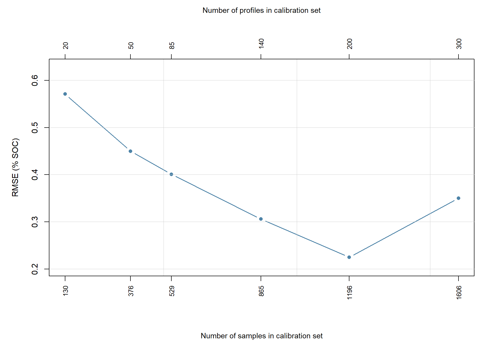
Figure 4.18: DSM performance metrics (RMSE) on the held-out validation profiles as a function of the number of samples used to calibrate the DRS model. The bottom x-axis shows the number of calibration samples; the top x-axis shows the corresponding number of calibration profiles.
4.9 Additional exercises for independent exploration
The exercises below suggest directions for independent investigation. Each is self-contained and can be attempted in any order.
Try different spectral preprocessing combinations (difficulty: low). The workflow used a Savitzky–Golay first derivative followed by SNV. Other combinations (smoothing only, SNV without derivative, multiplicative scatter correction) may perform better or worse depending on the dataset. Apply alternative preprocessing sequences and compare DRS model RMSE and final SOC map accuracy.
Map the principal components of the MIR spectra (difficulty: medium). Rather than predicting SOC directly, the scores of the first few principal components of the spectra can be mapped spatially using the same DSM workflow. Each PC score map captures a distinct axis of spectral variation that reflects underlying soil compositional gradients (Viscarra Rossel et al., 2011). These maps can also be used as additional environmental covariates alongside the standard terrain and climate layers when predicting SOC.
Use alternative calibration models that provide uncertainty estimates (difficulty: medium). The quantile regression forest used here is one option. Gaussian process regression, Bayesian regularised neural networks, and conformal prediction wrappers for any regression model are alternatives that also produce sample-level uncertainty estimates. Compare their prediction intervals against those of the quantile regression forest.
Build a model from a larger external spectral library (difficulty: medium–high). Use a large open-access soil spectral library such as the one described by Safanelli et al. (2025) to calibrate a DRS model without any Kansas samples, then apply it to predict SOC for the full Kansas dataset. Compare the resulting predictions and uncertainty estimates against those of the locally calibrated model. This tests model transferability and the practical value of large-scale spectral libraries for operational soil mapping.
4.10 Summary
This practical exercise demonstrated how DRS-derived soil property estimates can be incorporated into a DSM workflow while explicitly accounting for observation-level uncertainty. MIR spectra from the Kansas dataset were first resampled, preprocessed, and used to calibrate a quantile regression forest model for SOC prediction. The calibration subset was selected from the spectral space and then completed at the soil-profile level to avoid information leakage between calibration and prediction samples.
The DRS model produced, for each non-calibration sample, both a predicted SOC value and an associated prediction standard deviation. These predictions were combined with the laboratory SOC measurements from the calibration samples to assemble an augmented SOC dataset. Laboratory observations were assigned a constant analytical uncertainty, while DRS-derived observations retained the uncertainty estimated from the quantile regression forest. This allowed both data sources to be represented within a common uncertainty framework.
SOC values and uncertainties were then harmonized to the 0–30 cm depth interval using depth-weighted averaging. The resulting reference dataset contained only laboratory measurements, whereas the augmented dataset combined laboratory measurements with DRS-based predictions. The empirical distributions of SOC in both datasets were similar after depth harmonization, indicating that the DRS predictions preserved the main distributional characteristics of the laboratory data.
In the DSM step, uncertainty estimates were converted into inverse-variance weights. Observations with lower uncertainty were given greater influence during model fitting, while observations with higher uncertainty contributed less. This weighting strategy ensured that DRS-derived predictions supplemented the laboratory dataset without being treated as equally reliable. Separate random forest models were then fitted using the reference dataset and the DRS-augmented dataset, and the resulting SOC maps were compared spatially.
The comparison between the baseline and augmented SOC maps illustrates how adding DRS-derived observations can modify spatial predictions by increasing the number of available soil observations. The difference map highlights the areas where the inclusion of spectroscopic predictions had the largest influence on the mapped SOC patterns. The validation step further compared the two modelling strategies using weighted performance metrics, so that model assessment reflected the uncertainty associated with each observation.
Overall, the exercise shows that DRS can be used not only to increase the number of SOC observations available for DSM, but also to do so in a way that preserves information about data quality. The approach is therefore more transparent than simply merging laboratory measurements and spectroscopic predictions as if they were equivalent observations. Although the example focused on SOC and MIR spectroscopy, the same principles can be extended to other soil properties, spectral regions, sensing technologies, and spatial modelling algorithms.